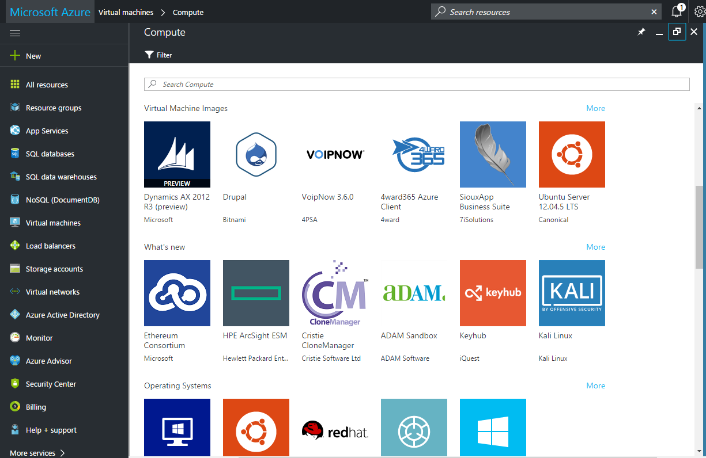
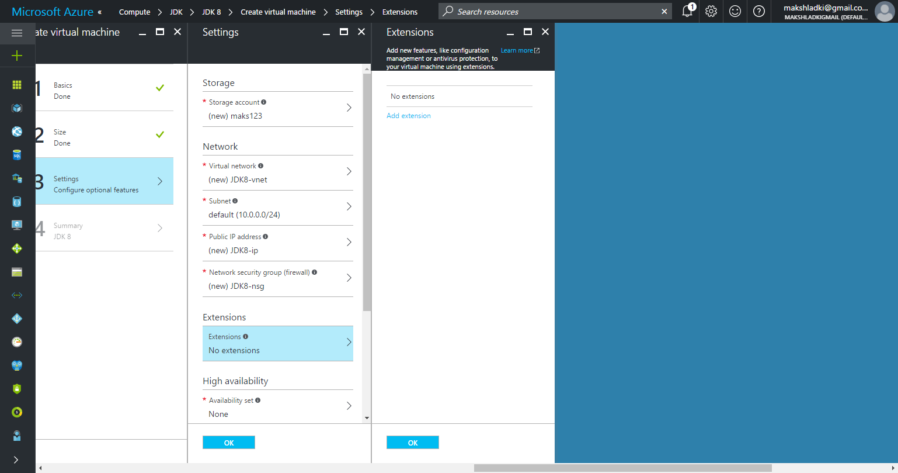
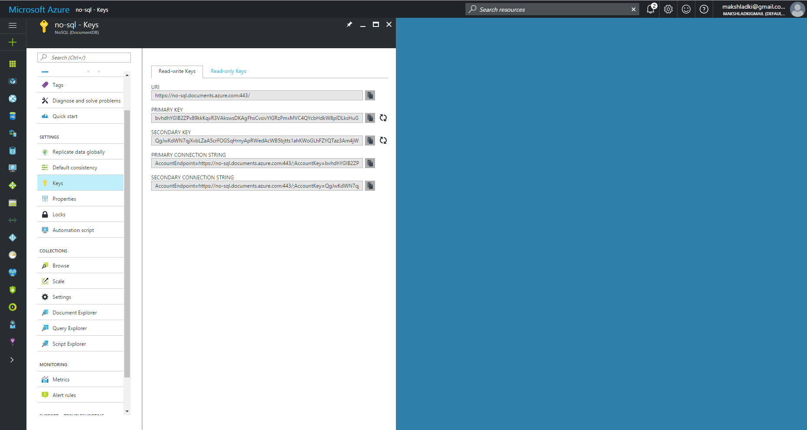
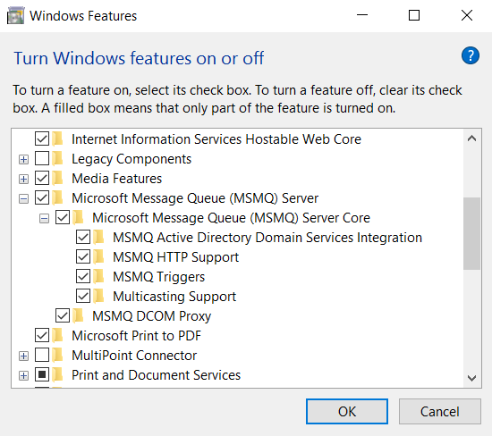
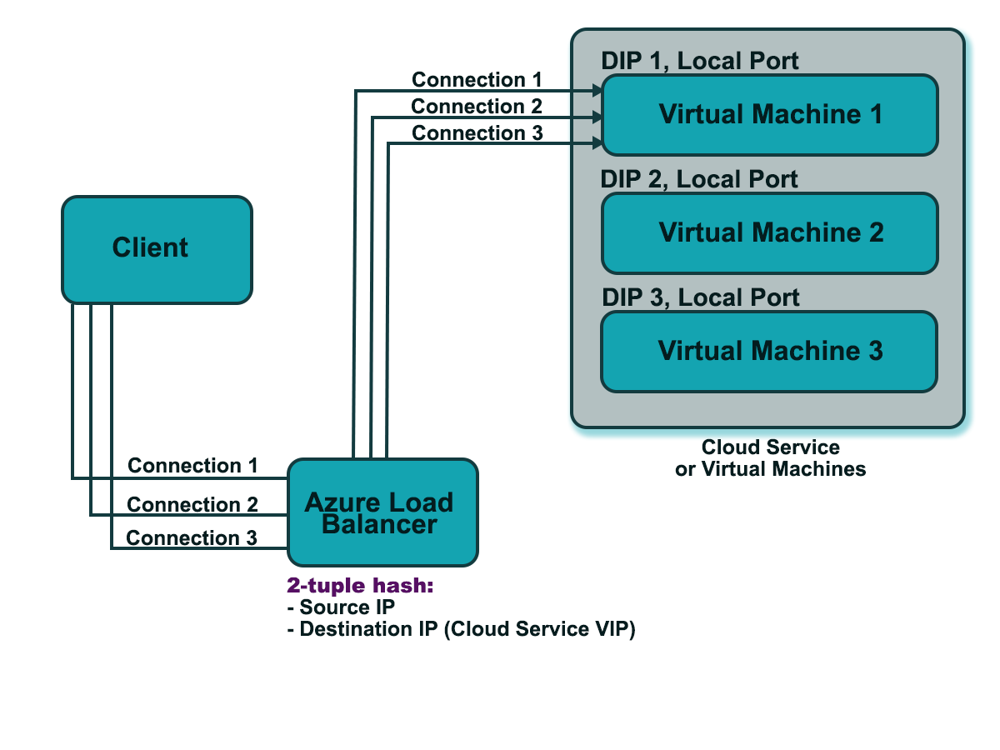

Платформа облачных вычислений Microsoft Azure
Облачные технологии
Гладкий Максим Валерьевич / github:MaksHladki
Содержание лекции
Microsoft Azure
Открытая и гибкая облачная платформа, позволяющая быстро создавать, развертывать и управлять приложениями в глобальной сети центров обработки данных под управлением Майкрософт. Приложения можно разрабатывать с помощью любого языка, инструмента или платформы. Кроме того, приложения в общедоступном облаке можно интегрировать с имеющейся ИТ-средой
Эволюция Microsoft Azure
Первый этап
- 2006 - создана «команда мечты» для разработки облачной ОС RedDog
- 2006 - команда Indigo (Windows Communication Foundation) приступает к работе над экспериментальным реле коммуникации
- 2006 - команда SQL приступает к разработке интернет-версии своей службы
- 2007 - три команды начинают сотрудничать друг с другом
- 2008 - объединение команд в проект Azure: службы .NET, онлайн-службы, службы SQL. Представлена Azure CTP
Второй этап
- 2009 - выходит версия CTP 3, поддержка доверенного и платформенного кода, геолокация, fast CGI, PHP и Java SDK. Azure становится открытой платформой, выпускается первый официальный SDK 1.0
- 2010 - платформа доступка в 21 стране, реализована поддержка БД более 50 ГБ, полноценная поддержка IIS и службы удаленного рабочего стола
- 2011 - инструмент SQL Azure Reporting, Scheduler SDK для поддержки ресурсоемких параллельных приложений
- 2012 - добавлена архитектура IaaS, выпущен Python SDK. ЦОДы работают в 8 регионах мира
- 2013 - добавлена служба Active Directory
Третий этап
- 2014 - добавлены технологии и интерфейсы машинного обучения
- 2014 - Windows Azure переименована в Microsoft Azure
- 2015 - оптимизирована и расширена возможность работы с Linux-дистрибутивами
- 2015 - добавлена поддержка контейнеров
- 2016 - добавлена технология блокчейн, облачный майнинг
Основные особенности
- Открытая - поддерживаются многие ЯП и инструменты
- Гибкая - разнообразие облачных служб (от утилит развертывания до SQL-хранилищ)
- Под управлением Майкрософт - ЦОДы в США, Европе и Азии
- Совместимая - многие компоненты легко интегрируются с Windows Server
- Собственная сеть CDN
Основные возможности
- Инфраструктура
- Мобильные приложения
- Интернет
- Медиаконтент
- Интеграция
- Идентификация и управление доступом
- Большие данные
- Разработка и тестирование
- Хранение, архивация и восстановление
- Управление данными
Три ОС в одной концепции
- Windows Server - платформа корпоративного уровня, фундамент облачных вычислений
- System Center - интегрированная платформа для централизованного управления частными, размещенными и общедоступными облаками
- Windows Azure — открытая, гибкая облачная платформа для разработки, развертывания и управления приложениями и задачами, размещенными в глобальной сети центров обработки данных Майкрософт
Особенности портала Microsoft Azure
- В универсальном магазине Marketplace представлены тысячи продуктов от корпорации Майкрософт и других поставщиков
- Единая масштабируемая система позволяет легко находить нужные ресурсы и выполнять различные операции по управлению
- Согласованные страницы управления (колонки) дают возможность управлять самыми разнообразными службами Azure, используя унифицированную систему отображения параметров, действий, данных для выставления счетов, сведений о работоспособности и использовании и т. д.
- Возможности персонализации позволяют создать собственный начальный экран, на котором после входа в систему будет отображаться только та информация, которая нужна пользователю
Free account

Архитектура Windows Azure
Типы приложений
С точки зрения пользователей
- Внутренние (on-premises app) - выполняются на компьютере пользователя
- Облачные - выполняются в среде Microsoft Azure в ЦОД
Службы Windows Azure
-
Вычислительные службы - предоставляют компьютерные ресурсы, на которых работают облачные приложения -
Сетевые службы - предоставляют облачные приложения и центры обработки данных пользователям различными способами -
Службы обработки данных - способы хранения, управления, защиты и анализа бизнес-данных, составление отчетов по ним -
Службы приложений - улучшают производительность, защиту и уровень интеграции облачных приложений, а также делают более простым процесс их освоения
Вычислительные службы
| Виртуальные машины | универсальная среда для создания, развертывания и управления виртуальными машинами |
| Веб-сайты | специализированная среда для создания и управления веб-сайтами, а также переноса существующих |
| Облачные службы | создание и развертывание масштабируемого ПО любой сложности на любом ЯП |
| Мобильные службы | технологии обработки и хранения данных для мобильных систем |
Сетевые службы
| Виртуальная сеть | позволяет использовать облако в качестве расширения локального ЦОДа |
| Диспетчер трафика | масштабирование трафика по определенным критериям: максимальная производительность, циклическое обслуживание и уровень отказоустойчивости |
Службы обработки данных
| Управление данными | хранение и управление данными в ВМ + MSQL, БД Azure SQL, NoSQL решениях через REST API, blob-хранилищах |
| Бизнес-аналитика | предоставляет службы SQL Server Reporting and Analysis, SharePoint Serve, Azure SQL Reporting, Azure Marketplace и HDInsight |
| HDInsight | специальная надстройка, позволяющая запускать Apache Hadoop в облаке Azure |
Службы обработки данных
| Кэш | распределенное решение для кэширования, ускоряющее работу облачных приложений и снижающее нагрузку на БД |
| Резервное копирование | средства автономной защиты данных на сервере, позволяют создавать как автоматические, так и ручные копии |
| Диспетчер восстановления | защита критически важных для бизнеса данных, приложений и служб в платформе виртуализации Hyper-V. Координация репликаций и восстановление частных облаков |
Службы приложений
| Мультимедийные службы | формируют процессы для создания, управления и распространения медиаконтента |
| Обмен сообщениями | шина обслуживания и очередь обеспечивают связь приложений в частном и/или общедоступном облаке |
| Узлы уведомлений | хорошо масштабируемая кросс-платформенная инфраструктура push-уведомлений для приложений, работающих на мобильных устройствах |
Службы приложений
| Службы BizTalk | функции B2B (Business-to-Business) и EAI (Enterprise Application Integration) для облачных и гибридных решений по интеграции |
| Active Directory | отвечает за управление идентификацией и контроль доступа для облачных приложений |
| Многофакторная аутентификация | дополнительный уровень аутентификации наряду с учетными данными пользователей, повышающий защищенность доступа к локальным и облачным приложениям |
Общая схема

Копнем поглубже

Веб-сайты
Определение
Веб-сайты Azure — это масштабируемая, безопасная и гибкая платформа, на основе которой можно создавать веб-приложения для бизнеса, расширять охват бренда и привлекать новых клиентов
В зависимости от выбранной ценовой категории вычислительные ресурсы могут находиться на общих или выделенных виртуальных машинах. Код приложения выполняется на управляемой виртуальной машине, которая изолирована от других клиентов
Особенности
- Портал самообслуживания с галереей наиболее популярных веб-решений
- Инструмент WebMatrix
- Инструмент публикации приложений
- Azure SDK для Visual Studio
- Утилиты для создания, конфигурирования и управления БД
- Интеграция с системами контроля версий: TFS, GitHub, Bitbucket и т.д.
- Инструмент мониторинга нагрузки и состояния ресурсов веб-приложения
- Утилиты диагностики и тестирования
- Конфигурация SSL-сертификатов
- Конфигурация версии платформы (.NET, PHP, Java и т.д.)
Примущества использования облака
- Поддержка нескольких языков и платформ (ASP.NET, Node.js, Java, Python, PowerShell)
- Оптимизация DevOps - непрерывная интеграция и развертывание (Team Services, BitBucket, тестирование A/B)
- Автомасштабирование
- Подключение к платформам SaaS и локальным данным. Более 50 соединителей для корпоративных систем (SAP, Oracle), служб SaaS (Salesforce, Office 365) и популярных интернет-служб (Facebook, Twitter)
- Шаблоны приложений - быстрое развертывание ПО с открытым исходным кодом (Joomla, Drupal) с помощью мастера
- Интеграция с Visual Studio и другими IDE
- Дополнительные функции (CORS) и интеграция с мобильными приложениями (push-уведомления)
Режимы работы веб-сайтов
- Бесплатный - мультиарендная архитектура, каждому сайту выделена квота на ресурсы процессора, памяти и сети. Количество сайтов зависит от тарифного плана, SLA отсутствует
- Стандартный - можно выбрать сайты, которые будут работать на специально выделенной виртуальной машине (могут размещаться до 500 веб-сайтов)
- Распределенный - гарантируется SLA более низкого уровня по сравнению со стандартным режимом
Доступность серверов
- Малый сервер (1 ядро, 1,75 ГБ оперативной памяти)
- Средний сервер (2 ядра, 3,5 ГБ оперативной памяти)
- Большой сервер (4 ядра, 7 ГБ оперативной памяти)
Автомасштабирование

Agile разработка
- Автоматическая сборка после каждой фиксации
- Самопроверка сборок
- Выполнение тестов в клоне рабочей среды
- Удобный просмотр результата последней сборки
- Ежедневная фиксация в главной ветви
- Автоматическое развертывание
Источники данных для непрырывного развертывания
- VS Team Services
- OneDrive
- Локальный репозиторий Git
- Github
- Bitbucket
- Внешний репозиторий Git
- SVN
- Dropbox
Пример развертывания веб-приложения
Переход из dashbord'a
Панель управления веб-сайтами
Коллекция приложений

Коллекция приложений
Коллекция приложений
Коллекция приложений

Выбор приложения

Создание приложения

Параметры приложения

Процесс развертывания
Обзор приложения
Быстрый старт

Интеграция

Выбор репозитория

Выбор ветки

Результат интеграции
Результат интеграции

Мониторинг посещений

Резервирование
Консоль
Виртуальные машины
Определение
Виртуальные машины Windows Azure — это масштабируемая IaaS-платформа по запросу, позволяющая быстро подготавливать и развертывать в облаке серверные задачи
Примеры использования
- Разработка и тестирование. ВМ обеспечивают быстрый и простой способ создания компьютера с определенными конфигурациями, необходимыми для написания кода и тестирования приложения
- Приложения в облаке. Используя ВМ в качестве контейнера для приложения позволяет гибко управлять ресурсами ВМ и приложения, платить за дополнительные ВМ, если они нужны, и отключать их, если они не нужны
- Расширенный центр обработки данных. ВМ в виртуальной сети Azure можно легко подключить к корпоративной сети
Особенности
- Механизмы настройки, контроля и отслеживания
- Балансировщик нагрузки
- Инструмент подключения к другим облачным службам Azure, на которых работают веб-роли и рабочие роли
- Механизм копирования виртуальных жестких дисков (Virtual Hard Disk, VHD) из локальной среды в Azure и на их основе создать новые виртуальные машины
- Механизм выгрузки VHD из Azure и возможность запуска локально
- Новые ВМ можно создавать из стандартных образов, доступ-ных в галерее Azure (актуальные версии Windows Server, различные сборки Linux, Microsoft SharePoint, Microsoft SQL Server, Microsoft BizTalk Server и т.д.)
- Можно использовать для развертывания собственные сборки, которые были созданы локально
Особенности
- Удаленное управление ВМ Windows по протоколу RDP
- Управление средствами Windows PowerShell
- ВМ Linux поддерживают удаленное управление по SSH
- Механизм создания и подключения к дисков для хранения информации приложений
- Автомасштабирования ресурсов (дополнительное количество ядер процессора, объем ОП)
- Автоматическое сохранение и самостоятельное восстановление после аппаратных сбоев
- Автоматическое сохранение информации на подключенных дисках, они резервированы BLOB-объектами хранилища Windows Azure. Экземпляры веб-ролей и рабочих ролей самовосстанавливаются, но не сохраняются
- Использование ВМ тарифицируется по часам
Способы создания ВМ
- Портал Azure - создание ВМ через UI портала
- Шаблоны - создание ВМ с использованием шаблона диспетчера ресурсов
- Azure PowerShell - создание ВМ с помощью PowerShell
- Клиентские пакеты SDK - Развертывание ресурсов Azure с помощью языка C#
- Интерфейсы API REST - создание или обновление ВМ через HTTP
Типы ВМ
Серия А
ВМ начального уровня. Идеально подходят для разработки и тестирования систем, потребляющих небольшое количество трафика, БД и интеграцию приложений с внешними репозиториями
Серия D
ВМ общего назначения. Обладают производительным процессором, большим объемом оперативной памяти, опционально устанавливаемым SSD. Используются в приложениях совместно с реляционными БД, кэшированием и аналитики
Серия D (продолжение)

Серия F
ВМ для сложных пользовательских приложений. На одно ядро выделяется более 2 GB RAM и 16 GB SSD. Используются процессоры серии Xenon E5 или Broadwell c частотой до 3.1 GHz и технологией Turbo Boost. Идеально подходит для сложной аналитики, веб и игровых сервисов
Серия G
ВМ для сложных пользовательских приложений. Отличается от класса F большим объемом оперативной памяти, количеством ядер процессора (до 32 CPU). Для кеширования ОП используются SSD. Приложения способны взаимодействовать с большими SQL и NoSQL хранилищами, интегрироваться с SAP и другими решениями
Серия H
Высокопроизводительные ВМ. Используются 8- или 16-ядерные процессоры Xenon последнего поколения, память стандарта DDR4. Для хранения данных и кеширования используются SSD. Для организации RDMA используется сеть Infiniband. Используются для сложных вычислений в режиме realtime, пакетной обработки, анализа, моделирования
Серия N
ВМ с широкой поддержкой GPU. Используется платформа NVIDIA Tesla и технологии NVIDIA Grid. Отлично подходят для рендерина графики и видео, удаленной виртуализации, высокопроизводительных вычислений и майнинга, аналитики
Расширения и компоненты ВМ
Расширения ВМ
Небольшие приложения, выполняющие настройку и автоматизацию после развертывания на виртуальных машинах Azure
- Изменение функций безопасности и идентификации, в том числе сброс значений учетных записей и использование защиты от вредоносных программ
- Запуск, остановка и настройка функций мониторинга и диагностики
- Сброс или установка функций подключения (RDP, SSH)
- Диагностика, мониторинг и управление ВМ
- Расширения можно запускать с помощью интерфейса командной строки, PowerShell, шаблонов Resource Manager и UI портала
Агент виртуальной машины
Защищенный и нетребовательный к ресурсам процесс, который устанавливает, настраивает и удаляет расширения ВМ на экземплярах виртуальных машин Azure из коллекции образов и на пользовательских экземплярах виртуальных машин при наличии установленного агента ВМ
- Два вида агента: для Windows и Linux
- Устанавливается автоматически при создании виртуальной машины из коллекции образов
- Возможность конфигурирования для собственных образов ВМ
Примеры расширений
| Расширение Custom Script в ОС Windows | Выполняет скрипты на виртуальной машине Azure |
| Расширение DSC в ОС Windows | Расширение PowerShell DSC (настройка требуемого состояния) для Docker |
| Расширение системы диагностики | Управляет системой диагностики Azure |
Таблица связанных ресурсов
| Ресурс | * | Описание |
|---|---|---|
| Группа ресурсов | + | ВМ должна входить в группу ресурсов |
| Учетная запись хранения | + | ВМ требуется учетная запись для хранения виртуальных жестких дисков |
| Виртуальная сеть | + | ВМ должна быть подключена к виртуальной сети |
| Общедоступный IP-адрес | - | Для удаленного доступа к ВМ можно назначить общедоступный IP-адрес |
| Сетевой интерфейс | + | Для обмена данными в сети нужен сетевой интерфейс |
| Диски данных | - | ВМ может содержать диски данных для расширения объема ресурсов хранения |
Контейнеры
Особенности
- Различные способы создания узлов в соответствии с конкретной ситуацией
- Создание контейнеров с помощью таких оркестраторов, как Marathon или Swarm
- Resource Manager и шаблоны ресурсов для упрощения развертывание и обновление распределенных приложений
- Интеграция с большим массивом инструментов управления конфигурациями
- Автоматическое создание образов с использованием dockerfile и простых команд
- Используются системы контроля версий в качестве источников приложений контейнера
- Могут использовать изолированные компоненты приложений вместо компьютеров
Разница между ВМ и контейнерами
- Контейнеры не требуют и не используют гипервизор для изоляции
- Контейнеры использует изоляцию процессов и файловой системы в ядре Linux для получения контейнером доступа только к определенным компонентам ядра и собственной изолированной файловой системе
- Контейнер является экземпляром уникальной ОС (с точки зрения приложения)
- Приложения в контейнере не могут видеть процессы или другие ресурсы за пределами своего контейнера
- Время запуска контейнера и дополнительные затраты на дисковое пространство для хранения гораздо ниже
- Контейнеры Windows поддерживают формат образов Docker и API Docker, но ими можно также управлять с помощью PowerShell
Сравнение основных функций ВМ и контейнеров
| Функция | Виртуальные машины | Контейнеры |
|---|---|---|
| Безопасность | В большей степени | В меньшей степени |
| Память на диске | Полная версия ОС и приложения | Только требования приложений |
| Время для запуска | Загрузка ОС и приложений | Только запуск приложений, ядро уже работает |
| Переносимость | Много вариантов | Переносимость в формате образа (хуже) |
| Автоматизация образов | Зависит от ОС и приложений | Docker и т.д. |
Пример создания ВМ
Переход из главного меню
Список решений
Список решений

Список решений
ОС от Microsoft
ОС от Microsoft
Visual Studio
Подписка от MSDN
Ubuntu Server
JDK
Создание ВМ
Базовые настройки
Тарифный план
Тарифный план
Тарифный план
Тарифный план
Настройки: Storage
Настройки: Virtual Network
Настройки: Subnetwork
Настройки: IP
Настройки: Security Group
Настройки: Extensions
Настройки: Availability
Итоговые параметры настройки
Процесс развертывания
Панель управления
RDP
Мониторинг нагрузки
Подключение по RDP
Установленные приложения
Локальные диски
Hello World
Результат выполнения
Мониторинг нагрузки
Мониторинг нагрузки
Мониторинг нагрузки
Облачные службы
Определение
Позволяют быстро создавать, развертывать многоуровневые приложения в облаке и управлять ими. Таким образом, можно сконцентрироваться на разработке, тестировании, развертывании и управлении ПО, а не тратить время на обслуживание нижележащей инфраструктуры
Облачные службы являются примером PaaS. Так же как и служба приложений, эта технология предназначена для поддержки масштабируемых, надежных и недорогих в эксплуатации приложений. Облачные службы размещаются на ВМ, однако пользователь обладает большим контролем над ВМ, чем служба приложений. Можно установить собственное программное обеспечение в ВМ, в которых выполняются облачные службы, а также удаленно управлять ими
Особенности
- Назначение нескольких ролей приложению при распределенной обработке либо гибком масштабировании его ресурсов
- Приложения облачных служб можно создать практически на любой популярной платформе разработки (.NET, Node.js, PHP, Java, Python и Ruby)
- Возможность интегрировать мобильные и мультимедийные службы Azure в приложения
- Автомасштабирования - приложение автоматически получает или отдает ресурсы по мере необходимости
- Облачные службы предоставляются как PaaS, а не IaaS - пользователю нужно всего лишь развернуть свое приложение. Управление платформой (включая развертывание новых версий ОС) осуществляется без его участия
Особенности
- Пользователь не создает ВМ - предоставляется файл конфигурации, сообщающий Azure, сколько ресурсов ему требуется (например, 2 экземпляра веб-роли)
- Расширенный мониторинг - обнаруживает аппаратные сбои, неисправные ВМ и приложения. Для этого агент используется внутри каждой веб-роли и рабочей роли, что позволяет в случае сбоя запустить новые ВМ и экземпляры приложений
- Механизм оповещения в реальном времени о сбоях в работе служб или снижении их производительности
- Приложение облачных служб не сохраняет состояние в файловой системе ВМ. Оно должно явным образом записывать все данные о состоянии в БД, BLOB-объекты и т.д. (упрощает масштабирование, повышает отказоустойчивость)
Два варианта запуска
- Веб-роль - сервер Windows запускается с автоматическим развертыванием приложения в IIS
- Рабочая роль - сервер Windows запускается без служб IIS
Общая схема
Настройка облачных служб
- Изменение облачной службы (свойства и конфигурация, правила оповещений, управление сертификатами и доступом пользователей)
- Управление версией гостевой ОС - Azure периодически обновляет гостевые ОС до последнего поддерживаемого образа в семействе ОС, указанном в конфигурации службы (CSCFG-файл). Можно изменить параметры данного файла
- Мониторинг - управление оповещениями для определенных типов данных (скорость чтения с диска, процент использования ЦП, входящая скорость сети и т.д.)
- Конфигурация параметров использования удаленного рабочего стола
- Средства развертывания
Использование служб автоматизации
Служба автоматизации Azure — это служба Azure для упрощения управления облаком путем автоматизации процессов. С помощью службы автоматизации можно автоматизировать длительные, выполняемые вручную, ненадежные и часто повторяющиеся задачи для повышения надежности, эффективности и ускорения вывода продукта пользователя на рынок
Средства автоматизации
- Командлеты PowerShell
- Готовые скрипты в разделе "Инструменты Azure PowerShell"
- Возможность связать командлеты в службе автоматизации Azure с командлетами для других служб Azure для автоматизации сложных задач в службах Azure и системах сторонних производителей
Принцип выделения ресурсов
- Серверы в центрах обработки данных Azure разделены на кластеры
- Запрос о выделении новой облачной службы отправляется в несколько кластеров
- Когда первый экземпляр развертывается в облачной службе (в тестовой или рабочей области), эта облачная служба прикрепляется к кластеру
- Все последующие развертывания облачной службы выполняются в том же кластере
Схема выделения ресурсов

Причины возникновения ошибок
- Если запрос на выделение прикреплен к одному кластеру, возрастает вероятность того, что не удастся найти свободные ресурсы, так как пул доступных ресурсов ограничен размером кластера
- Если запрос на выделение прикреплен к одному кластеру, а тип запрошенного ресурса не поддерживается, запрос завершится ошибкой, даже если в кластере есть свободные ресурсы
Сценарии выделения ресурсов
- Развертывание в промежуточном слоте - если развертывание уже существует в рабочей области, то новое промежуточное развертывание может быть выделено только в том же кластере, что и рабочая область
- Масштабирование - для добавления новых экземпляров в существующую облачную службу требуется выделение ресурсов в том же кластере. Для мелких запросов масштабирования ресурсы обычно выделяются, но это происходит не всегда. Если кластер близок к заполнению, запрос может завершиться ошибкой
- Территориальная группа - если облачная служба не прикреплена ни к какой территориальной группе, структура может распределить новое развертывание в пустую облачную службу в любом кластере соответствующего региона
сертификаты службы
Сертификаты используются в Azure для облачных служб (сертификаты службы), а также для проверки подлинности с помощью API управления. Используются сертификаты x.509 v3. Они могут содержать закрытый и открытый ключ, а также имеют отпечаток, служащий для их однозначной идентификации. Этот отпечаток включен в файл конфигурации Azure для определения сертификата, который будет использоваться облачной службой, и может быть заверен другим доверенным сертификатом или быть самозаверяющими
Особенности
- Сертификаты службы присоединяются к облачным службам, обеспечивая безопасное взаимодействие со службой. Например, при развертывании веб-роли нужно указать сертификат, который может выполнять проверку подлинности доступной конечной точки HTTPS. Сертификаты службы, определенные в службе, автоматически развертываются в ВМ с запущенным экземпляром роли
- Сертификатами службы можно управлять отдельно от служб. Это могут делать разные пользователи (например, разработчик и ИТ-менеджер Azure)
Диагностические данные облачных служб
| Источник данных | Формат хранения |
|---|---|
| Журналы Azure | Таблица |
| Журналы IIS | BLOB-объект |
| Журналы инфраструктуры системы диагностики Azure | Таблица |
| Журналы трассировки невыполненных запросов | BLOB-объект |
| Журналы событий Windows | Таблица |
| Счетчики производительности | Таблица |
| Аварийные дампы | BLOB-объект |
| Пользовательские журналы ошибок | BLOB-объект |
Средства для просмотра диагностических данных
- Обозреватель сервера в Visual Studio - позволяет просматривать больших двоичных объектов, доступных только для чтения, и табличных данных из учетных записей хранения Azure (необходимо интегрировать инструменты Azure в VS)
- Обозреватель службы хранилища — это автономное приложение, которое упрощает работу с данными из службы хранилища Azure на платформе Windows, OSX и Linux
- Azure Management Studio - содержит диспетчер диагностики Azure, который позволяет просматривать и скачивать данные диагностики, которые собирают выполняемые в Azure приложения, а также управлять этими данными
Application Insights
Определение
Application Insights позволяет осуществлять мониторинг доступности, производительности и использования веб-приложения. Благодаря получаемым данным о производительности и эффективности работы приложения на практике пользователь Azure может принимать осознанные решения о направлении разработки в каждом жизненном цикле
Типы данных
- Частота HTTP-запросов, время ответа, частота успешных выполнений
- Частота вызовов зависимостей (HTTP и SQL), время ответа, частота успешных выполнений
- Трассировки исключений из сервера и клиента
- Трассировки журналов диагностики
- Количество просмотров страниц, количество пользователей и сеансов, время загрузки браузера, исключения
- Счетчики производительности сервера
- Пользовательская телеметрия клиента и сервера
- Cегментация с учетом расположения клиента, версии браузера, версии ОС, экземпляра сервера, пользовательских измерений и многого другого
- Тесты доступности
Средства диагностики и анализа
- Интеллектуальные и настраиваемые вручную оповещения о частоте сбоев, доступности и других показателях
- Диаграммы сводных показателей за определенный период времени
- Поиск экземпляров запросов, исключений, пользовательских событий, трассировок журналов, количества просмотров страниц, зависимостей и вызовов AJAX по журналам диагностики
- Аналитика — эффективный язык запросов для телеметрии
- Панели мониторинга — на них формируются диаграммы, необходимые для отслеживания компонентов приложения
Схема работы

Аналитические средства для разработчиков
Языки
- .NET
- Java
- JavaScript
- Objective-C
- PHP
- Python
- Ruby
- Другие
Платформы и среды
- Angular
- ASP.NET
- Android
- Docker
- iOS
- J2EE
- Приложение Mac OS X
- Node.JS
- UWP
- Другие
Платформы ведения журналов
- Log4Net, NLog
- Java, Log4J или Logback
- Semantic Logging (SLAB)
- Облачное нагрузочное тестирование
- Подключаемый модуль LogStash
Системы управления содержимым
- Concrete
- Drupal
- Joomla
- Orchard
- SharePoint
- WordPress
Экспорт и анализ данных
- Alooma
- Power
- BI
Создание собственного пакета SDK
Если для языка или платформы не существует пакета SDK, можно легко создать его
Оповещения
- Автоматическое получение оповещения превентивной диагностики, которые сообщают о необычных изменениях в частоте сбоев и других метриках
- Тесты доступности для постоянного тестирования веб-сайта из расположений по всему миру и немедленного получения сообщений электронной почты в случае сбоя проверки
- Конфигурация оповещений для получения информации о выходе метрик, таких как время отклика или доля исключений, за допустимые границы
Фильтрация и предварительная обработка
- Выборка сокращает объем данных телеметрии, не искажая статистические данные. Благодаря выборке связанные точки данных хранятся вместе, что облегчает навигацию между ними во время диагностики проблемы
- Фильтрация позволяет выбирать или изменять данные телеметрии в пакете SDK перед отправкой на сервер. Например, можно исключить запросы от роботов. При помощи фильтрации сократить трафик проще, чем при помощи выборки
- Инициализаторы телеметрии добавляют свойства к любым данным телеметрии, включая данные из стандартных модулей
- API пакета SDK используется для отправки пользовательских событий и показателей
Настройка App Insights
Добавление новой службы
Настройка параметров

Результат настройки

Панель управления

Интерфейс ITelemetry
public interface ITelemetry
{
// Контекст связанный с текущей телеметрией
TelemetryContext Context { get; }
// Отслеживания абсолютного порядка телеметрий. Состоит из двух частей:
// постоянный идентификатор для текущего сеанса
// и идентификатор для каждого события добавляется в очередь (инкрементален)
string Sequence { get; set; }
// Время записи данных телеметрии
DateTimeOffset Timestamp { get; set; }
// Проверяет наличие потенциально опасных (или не валидных) данных
void Sanitize();
}
Класс TelemetryContext
public sealed class TelemetryContext
{
public TelemetryContext();
public CloudContext Cloud { get; }
public ComponentContext Component { get; }
public DeviceContext Device { get; }
public string InstrumentationKey { get; set; }
public LocationContext Location { get; }
public OperationContext Operation { get; }
public IDictionary<string, string> Properties { get; }
public SessionContext Session { get; }
public UserContext User { get; }
}
Класс TelemetryConfiguration
public sealed class TelemetryConfiguration : IDisposable
{
public TelemetryConfiguration();
public static TelemetryConfiguration Active { get; }
public bool DisableTelemetry { get; set; }
public string InstrumentationKey { get; set; }
public ITelemetryChannel TelemetryChannel { get; set; }
public IList<ITelemetryInitializer> TelemetryInitializers { get; }
public TelemetryProcessorChainBuilder TelemetryProcessorChainBuilder { get; }
public ReadOnlyCollection<ITelemetryProcessor> TelemetryProcessors { get; }
public static TelemetryConfiguration CreateDefault();
public static TelemetryConfiguration CreateFromConfiguration(string config);
public void Dispose();
}
Класс TelemetryClient
public sealed class TelemetryClient
{
public TelemetryClient();
public TelemetryClient(TelemetryConfiguration configuration);
public TelemetryContext Context { get; }
public string InstrumentationKey { get; set; }
public void Flush();
public void Initialize(ITelemetry telemetry);
public bool IsEnabled();
public void Track(ITelemetry telemetry);
public void TrackAvailability(AvailabilityTelemetry telemetry);
public void TrackAvailability(string name, DateTimeOffset timeStamp, TimeSpan duration, string runLocation, bool success, string message = null);
public void TrackEvent(EventTelemetry telemetry);
public void TrackEvent(string eventName, IDictionary<string, string> properties = null, IDictionary<string, double> metrics = null);
public void TrackException(ExceptionTelemetry telemetry);
public void TrackException(Exception exception, IDictionary<string, string> properties = null, IDictionary<string, double> metrics = null);
public void TrackMetric(MetricTelemetry telemetry);
public void TrackMetric(string name, double value, IDictionary<string, string> properties = null);
public void TrackPageView(string name);
public void TrackPageView(PageViewTelemetry telemetry);
public void TrackRequest(RequestTelemetry request);
public void TrackRequest(string name, DateTimeOffset startTime, TimeSpan duration, string responseCode, bool success);
public void TrackTrace(TraceTelemetry telemetry);
public void TrackTrace(string message);
public void TrackTrace(string message, IDictionary<string, string> properties);
public void TrackTrace(string message, SeverityLevel severityLevel);
public void TrackTrace(string message, SeverityLevel severityLevel, IDictionary<string, string> properties);
}
Основные методы класса TelemetryClient
Метод TrackTrace
Используется для диагностики проблемных мест (анализ и диагностический поиск) приложения. Может использоваться как "обертка" для системы логирования
public void TrackTrace(string message);
public void TrackTrace(string message, IDictionary<string, string> properties);
public void TrackTrace(string message, SeverityLevel severityLevel);
public void TrackTrace(
string message,
SeverityLevel severityLevel,
IDictionary<string, string> properties
);
public void TrackTrace(TraceTelemetry telemetry);
SeverityLevel
public enum SeverityLevel
{
Verbose = 0,
Information = 1,
Warning = 2,
Error = 3,
Critical = 4
}
Класс TraceTelemetry
Используется для логирования данных. Оперирует сообщением, временем активации и дополнительными параметрами
public sealed class TraceTelemetry :
ITelemetry, ISupportProperties, ISupportSampling
{
public TraceTelemetry();
public TraceTelemetry(string message);
public TraceTelemetry(string message, SeverityLevel severityLevel);
public TelemetryContext Context { get; }
public string Message { get; set; }
public IDictionary<string, string> Properties { get; }
public string Sequence { get; set; }
public SeverityLevel? SeverityLevel { get; set; }
public DateTimeOffset Timestamp { get; set; }
}
Метод TrackPageView
Логирует название страницы (web, mobile, desktop)-приложения, с которой пользователь работает в данный момент
public void TrackPageView(string name);
public void TrackPageView(PageViewTelemetry telemetry);
Класс PageViewTelemetry
Отслеживание посещаемости страниц пользователями
public sealed class PageViewTelemetry :
ITelemetry, ISupportProperties, ISupportSampling
{
public PageViewTelemetry();
public PageViewTelemetry(string pageName);
public TelemetryContext Context { get; }
// Длительность посещения страницы
public TimeSpan Duration { get; set; }
// Пользовательские метрики
public IDictionary<string, double> Metrics { get; }
// Имя страницы
public string Name { get; set; }
// Словарь для дополнительных параметров
public IDictionary<string, string> Properties { get; }
public string Sequence { get; set; }
// Время, когда событие произошло
public DateTimeOffset Timestamp { get; set; }
// URL-страницы
public Uri Url { get; set; }
}
Метод TrackEvent
Позволяет логировать вызовы событий в приложении для определения частотности выбора пользователем определенной функции, цели и т.д.
public void TrackEvent(EventTelemetry telemetry);
public void TrackEvent(
string eventName,
IDictionary<string, string> properties = null,
IDictionary<string, double> metrics = null
);
Метод TrackRequest
Применяется для логирования или имитации выполнения HTTP-запросов в приложении
public void TrackRequest(RequestTelemetry request);
// name: имя запроса или путь
// startTime: время инициализации запроса
// duration: продолжительность выполнения
// responseCode: status code
// success: True, если обработан успешно
public void TrackRequest(
string name,
DateTimeOffset startTime,
TimeSpan duration,
string responseCode,
bool success
);
Класс RequestTelemetry
Инкапсулирует информацию о HTTP-запросах в приложении
public sealed class RequestTelemetry :
OperationTelemetry, ITelemetry, ISupportProperties, ISupportSampling
{
public RequestTelemetry();
public RequestTelemetry(string name, DateTimeOffset startTime,
TimeSpan duration, string responseCode, bool success);
public override TelemetryContext Context { get; }
public override TimeSpan Duration { get; set; }
public string HttpMethod { get; set; }
// Идентификатор запроса
public override string Id { get; set; }
public IDictionary<string, double> Metrics { get; }
// Имя человека, выполнявшего запрос
public override string Name { get; set; }
public override IDictionary<string, string> Properties { get; }
public string ResponseCode { get; set; }
public override string Sequence { get; set; }
// Идентифицирует субъект, обычно записывается хеш
public string Source { get; set; }
public override bool? Success { get; set; }
public override DateTimeOffset Timestamp { get; set; }
public Uri Url { get; set; }
}
Метод TrackMetric
Используется для отправки метрик, которые не привязаны к конкретным событиям. Метрики отображаются в виде статистических графиков, но в отличие от событий, можно выполнить диагностический поиск по отдельным значениям
public void TrackMetric(
string name, // имя метрики
double value, // значение метрики
IDictionary<string, string> properties = null
// дополнительные свойства для классификации и фильтрации
);
public void TrackMetric(MetricTelemetry telemetry);
Класс MetricTelemetry
Инкапсулирует логику отслеживания метрик
public sealed class MetricTelemetry :
ITelemetry, ISupportProperties
{
public MetricTelemetry();
public MetricTelemetry(string metricName, double metricValue);
public TelemetryContext Context { get; }
// количество элементов
public int? Count { get; set; }
// максимальное значение для метрики
public double? Max { get; set; }
// минимальное значение для метрики
public double? Min { get; set; }
public string Name { get; set; }
public IDictionary<string, string> Properties { get; }
public string Sequence { get; set; }
// Стандартное отклонение для значения метрики
public double? StandardDeviation { get; set; }
public DateTimeOffset Timestamp { get; set; }
// Значение метрики
public double Value { get; set; }
}
Метод TrackException
Логирует отловленные исключения. Используется для подсчета показателя частоты возникновения проблем. Включает в отчеты результат стека вызова функций
public void TrackException(
Exception exception,
IDictionary<string, string> properties = null,
IDictionary<string, double> metrics = null
);
public void TrackException(ExceptionTelemetry telemetry);
Класс ExceptionTelemetry
Инкапсулирует логику логирования искулючительных ситуаций
public sealed class ExceptionTelemetry :
ITelemetry, ISupportProperties, ISupportSampling
{
public ExceptionTelemetry();
public ExceptionTelemetry(Exception exception);
public TelemetryContext Context { get; }
public Exception Exception { get; set; }
// Информация о месте обработки и отлова исключения
public ExceptionHandledAt HandledAt { get; set; }
public string Message { get; set; }
public IDictionary<string, double> Metrics { get; }
public IDictionary<string, string> Properties { get; }
public string Sequence { get; set; }
public SeverityLevel? SeverityLevel { get; set; }
public DateTimeOffset Timestamp { get; set; }
}
Интерфейс ITelemetryProcessor
public interface ITelemetryProcessor
{
void Process(ITelemetry item);
}
Пример
public class SuccessfulDependencyFilter : ITelemetryProcessor
{
private ITelemetryProcessor Next { get; set; }
public SuccessfulDependencyFilter(ITelemetryProcessor next)
{
this.Next = next;
}
public void Process(ITelemetry item)
{
if (!OKtoSend(item)) { return; }
ModifyItem(item);
this.Next.Process(item);
}
private bool OKtoSend(ITelemetry item)
{
var dependency = item as DependencyTelemetry;
if (dependency == null) return true;
return dependency.Success != true;
}
private void ModifyItem(ITelemetry item)
{
item.Context.Properties.Add("app-time", DateTime.Now.ToLongTimeString());
}
}
Простой пример
Nuget-пакет

Какой-то класс (псевдокод)
public class ApplicationInsight
{
private static readonly Lazy<ApplicationInsight> _instance;
private readonly TelemetryClient _tc;
private ApplicationInsight()
public static ApplicationInsight Instance {get;}
private TelemetryClient InitializeTelemetry(){/**/}
public void TrackPageView(string name){/**/}
public void TrackException(Exception ex){/**/}
public void TrackMetric(string metricName, int value){/**/}
public void TrackTrace(string eventName, int number){/**/}
public void Flush(){/**/}
}
Singleton
public class ApplicationInsight
{
private static readonly Lazy<ApplicationInsight> _instance =
new Lazy<ApplicationInsight>(() => new ApplicationInsight());
private readonly TelemetryClient _tc;
private ApplicationInsight()
{
_tc = InitializeTelemetry();
}
public static ApplicationInsight Instance
{
get { return _instance.Value; }
}
//.......................
}
Инициализация параметров
private TelemetryClient InitializeTelemetry()
{
var tc = new TelemetryClient
{
InstrumentationKey =
@"clientNotification-ddadd7d9-4bd5-411a-ab5c-c1fe3322e005;
a518aea0-2971-4fd4-9c38-595b8ffee7ab;
a518aea0-2971-4fd4-9c38-595b8ffee7ab"
};
tc.Context.User.Id = Environment.UserName;
tc.Context.Session.Id = Guid.NewGuid().ToString();
tc.Context.Device.OperatingSystem = Environment.OSVersion.ToString();
return tc;
}
Пример использования
static void Main(string[] args)
{
ApplicationInsight.Instance.TrackPageView("Home");
ApplicationInsight.Instance.TrackPageView("Account");
ApplicationInsight.Instance.TrackEvent("Login");
ApplicationInsight.Instance.TrackException(
new AuthenticationException("User not found"));
ApplicationInsight.Instance.TrackEvent("Redirect",
new Dictionary<string, string>
{
{ "From", "Account" },
{ "To", "Shop" },
{ "DailyKey" , "DSJU-WERDT-9803"}
});
ApplicationInsight.Instance.TrackPageView("Shop");
ApplicationInsight.Instance.TrackTrace("Overtime", 100);
ApplicationInsight.Instance.TrackMetric("Total count", 32);
ApplicationInsight.Instance.Flush();
}
Результаты в Azure

Аналитика
Аналитика — это мощный инструмент поиска Application Insights
Особенности языка
- Фильтрация необработанных данных телеметрии приложения по любым полям, включая пользовательские свойства и метрики.
- Соединение нескольких таблиц — соотношение запросов с просмотрами страниц, вызовами зависимостей, исключениями и трассировками журнала
- Сложные статистические агрегаты
- Такие же мощные, как в SQL, но гораздо проще для составления сложных запросов: вместо вложенных инструкций данные передаются из одной простой операции в другую
- Мгновенные яркие визуализации
- Типичный запрос содержит исходную таблицу и ряд операторов, разделенных |
Поддерживаемые конструкции языка
- Let: присвоение имени таблице
- Запросы и операторы: count, evaluate, extend, join, limit, mvexpand, parse, project, project-away, range, reduce, render directive, restrict clause, sort, summarize, take, top, top-nested, union, where, where-in
- Статистические функции: any, argmax, argmin, avg, buildschema, count, countif, dcount, dcountif, makelist, makeset, max, min, percentile, percentiles, percentilesw, percentilew, stdev, sum, variance
- Скаляры: логические литералы, логические операторы, приведения, скалярные сравнения, gettype, hash, iff, isnotnull, isnull, notnull, toscalar
- Числа: арифметические операторы, числовые литералы, abs, bin, exp, floor, gamma, log, rand, sqrt, todouble, toint, tolong
Поддерживаемые конструкции
- Дата и время: выражения даты и времени, литералы даты и времени, ago, datepart, dayofmonth, dayofweek, dayofyear, endofday, endofmonth, endofweek, endofyear, getmonth, getyear, now, startofday, startofmonth, startofweek, startofyear, todatetime, totimespan, weekofyear
- Строка: GUID, маскируемые строковые литералы, cтроковые литералы, cравнение строк, countof, extract, isempty, isnot, empty, empty, notempty, parseurl, replace, split, strcat, strlen, substring, tolower, toupper
- Массивы, объекты и динамические типы: литералы массива и объекта, функции динамического объекта, динамические объекты, выражения пути JSON, arraylength, extractjson, parsejson, range, todynamic, treepath
Основные операторы запроса
- take - отображение n строк
- top - выборка n строк
- sort - сортировка для всей таблицы
- project - выбор, переименование и вычисление столбцов
- extend - вычисление столбцов
- summarize - агрегирование групп строк
- where - фильтрация по условию
- join - доступ к нескольким таблицам, включая запросы и исключения
- let - присвоение результата переменной
Примеры запросов
Пример 1
requests | top 10 by timestamp desc
requests | sort by timestamp desc | take 10
Пример 2
requests | top 10 by timestamp desc
| project timestamp, name, resultCode
Пример 3
requests
| top 10 by timestamp desc
| project
name,
response = resultCode,
timestamp,
['time of day'] = floor(timestamp % 1d, 1s)
Пример 4
exceptions
| where device_Id == "browser"
| summarize count()
by device_BrowserVersion, outerExceptionMessage
Пример 5
dependencies
| where timestamp > ago(1d) and client_Type == "Browser"
| join (browserTimings | where timestamp > ago(1d))
on operation_Id
Пример 6
requests
| where timestamp > ago(7d) and client_City == "Hyderabad"
| summarize clients = dcount(client_IP)
by tod_UTC=bin(timestamp % 1d, 1h), resultCode
| extend local_hour = (tod_UTC + 5h + 30min) % 24h + datetime("2001-01-01")
Пример 7
SQL Azure
Определение
База данных SQL — это реляционная служба баз данных в Microsoft Cloud на основе ядра Microsoft SQL Server, которая подходит для выполнения критически важных рабочих нагрузок. База данных SQL обеспечивает прогнозируемую производительность на нескольких уровнях службы, динамическую масштабируемость без простоев, встроенную непрерывность бизнес-процессов и защиту данных
Преимущества
- Развитие и адаптация - динамически увеличивает производительность, надежность и безопасность данных с минимальными усилиями со стороны клиента
- Обнаружение угроз и оповещения - встроенный поведенческий анализ, оповещения в реальном времени, настраиваемые политики угроз, журнал аудита
- Автоматическая настройка - непрерывный анализ типовых действий приложений, адаптивная настройка и автоматическая коррекция производительности
- Своевременные рекомендации - БД отслеживает каждый запрос и оценивать его длительность, частоту и затраты ресурсов. Автоматические алгоритмы корректируют настройки базы данных оптимальным образом в соответствии с характером запросов
Преимущества
- Не требует администрирования - автоматическое резервное копирование, аварийное восстановление, обслуживание инфраструктуры, исправления систем безопасности, обновления компонентов
- Использование пулов эластичных баз данных для создания более эффективных мультитенантных приложений
- Управляемое автомасштабирование - пулы автоматически в режиме реального времени масштабируют производительность и емкость хранилища для эластичных баз данных
- Простота освоения - можно использовать привычные инструменты: cheetah, sql-cli и VS Code, Visual Studio, SQL Server Management Studio
- Управление через портал, PowerShell, REST API
Уровни служб
- Базовый - подходит для небольшой базы данных, для которой в определенный момент времени обычно выполняется одна активная операция (БД для разработки или тестирования, редко используемое приложение)
- Стандартный - оптимальный вариант для облачных приложений с низкими или средними требованиями к производительности операций ввода-вывода, поддерживающий несколько параллельных запросов (веб-приложения)
- Премиум - большой объем транзакций с высокими требованиями к производительности операций ввода-вывода. Поддерживается параллельная работа множества пользователей (БД для поддержки критически важных приложений)
Сравнение
| Максимальный размер БД | 2 ГБ | 250 ГБ | 1 ТБ |
| Максимальный размер хранилища | 117 ГБ | 750 ГБ | 1200 ГБ |
| Число баз в пуле | 400 | 400 | 50 |
| Период хранения резервной копии | 7 дней | 35 дней | 35 дней |
Правила масштабирования от Microsoft
| Тип | Пользователи | Размер БД |
|---|---|---|
| Basic | 5 | 720 МБ |
| Standard (S0) | 10 | 1 GB |
| Standard (S1) | 20 | 2,1 ГБ |
| Standard (S2) | 50 | 7,1 ГБ |
| Premium (P1) | 100 | 14 ГБ |
| Premium (P2) | 200 | 28 ГБ |
| Premium (P6/P3) | 800 | 114 ГБ |
Возможности SQL Azure
- Может представлять собой отдельную базу данных с собственным набором ресурсов (DTU)
- Может входить в состав пула баз данных, в котором набор ресурсов используется совместно (eDTU)
- Может входить в состав масштабируемого набора сегментированных баз данных, которые могут быть отдельными базами данных или частью пула
- Может входить в состав набора баз данных, использующихся в шаблоне разработки для мультитенантных приложений SaaS, которые могут быть отдельными базами данных или быть частью пула (или этот набор может иметь смешанную конфигурацию)
Поддерживаемые функции
Часть 1
| Компонент | SQL Server | SQL Azure |
|---|---|---|
| Активная георепликация | - | + |
| Постоянное шифрование | + | + |
| Группы доступности AlwaysOn | + | - |
| Присоединение базы данных | + | - |
| Роли приложений | + | + |
| Автомасштабирование | - | + |
Часть 2
| Компонент | SQL Server | SQL Azure |
|---|---|---|
| Azure Active Directory | - | + |
| Фабрика данных Azure | - | + |
| Аудит | + | + |
| Инструкции BACKUP и RESTORE | + | - |
| Встроенные функции | + | -/+ |
| Среда CLR | + | - |
Часть 3
| Компонент | SQL Server | SQL Azure |
|---|---|---|
| Курсоры | + | + |
| Сжатие данных | + | + |
| Зеркальное отображение базы данных | + | - |
| Моментальные снимки базы данных | + | - |
| Инструкции языка DDL | + | -/+ |
| Триггеры DDL | + | -/+ |
Часть 4
| Компонент | SQL Server | SQL Azure |
|---|---|---|
| Инструкции языка DML | + | -/+ |
| Триггеры DML | + | + |
| Эластичные пулы | - | + |
| Файловый поток | + | - |
| Функции | + | -/+ |
| Поддержка данных JSON | + | + |
Часть 5
| Компонент | SQL Server | SQL Azure |
|---|---|---|
| Управление на основе политик | + | - |
| Предикаты | + | + |
| Безопасность на уровне строк | + | + |
| Семантический поиск | + | - |
| Порядковые номера | + | + |
| Агент SQL Server | + | - |
Часть 6
| Компонент | SQL Server | SQL Azure |
|---|---|---|
| PowerShell | + | + |
| Репликация SQL Server | + | -/+ |
| Хранимые процедуры | + | + |
| Секционирование таблиц. | + | -/+ |
| Временные таблицы | + | + |
| XML-индексы | + | + |
Эластичеые пулы
Определение
Пулы эластичных БД SQL обеспечивают простое и экономически выгодное решение для управления целевыми показателями производительности для нескольких баз данных с совершенно разными и непредсказуемыми моделями функционирования
Проблема распределения ресурсов
- Подготовка избыточного количества ресурсов, соответствующего пиковой нагрузке (ведет к повышению затрат)
- Подготовка недостаточного количества ресурсов для экономии (ведет к снижению производительности и удовлетворенности клиентов во время пиковой нагрузки)
Пулы эластичных БД решают эту проблему, обеспечивая базы данных необходимыми ресурсами производительности, когда они нужны. Они предоставляют простой механизм распределения ресурсов в рамках прогнозируемого бюджета
Принцип работы
- Пулу предоставляется заданное количество единиц eDTU по фиксированной цене
- Отдельным БД в пуле предоставляется возможность автоматического масштабирования
- В условиях интенсивной нагрузки база данных может использовать дополнительные единицы eDTU для удовлетворения потребности в ресурсах
- При небольших нагрузках базы данных используют меньше ресурсов (eDTU), а при отсутствии нагрузок не используют их вовсе.
- Подготовка ресурсов для всего пула, а не для отдельной базы данных упрощает задачи управления. Кроме того, используя пул, вы можете спрогнозировать расходы
- Добавить дополнительные единицы eDTU в существующий пул можно без простоя баз данных
Eдиницы передачи данных (DTU)
Определение
DTU — это единица измерения ресурсов, которые гарантированно доступны любой отдельной базе данных SQL Azure с определенным уровнем производительности в рамках уровня службы для отдельных баз данных
Структура единицы
- Показатели ЦП
- Показатели памяти
- Показатели ввода-вывода данных
- Показатели ввода-вывода журналов транзакций
Повышение произодительности БД
Повысить производительность базы данных означает удвоить количество ресурсов, доступных для этой базы данных
Например, база данных P11 уровня "Премиум" с 1750 единицами DTU обеспечивает в 350 раз больше вычислительной мощи, чем база данных уровня "Базовый" с 5 единицами DTU
Пример
Как выбрать нужный тип на основе DTU?
- Использовать калькулятр
- Использовать PowerShell-скрипт
- Использовать Command Line Utility
Eдиницы передачи данных (eDTU)
Определение
eDTU — это единица измерения набора ресурсов (DTU), которые совместно используют несколько баз данных на сервере SQL Azure. Эти базы данных вместе называются пулом эластичных БД
Пулы эластичных БД обеспечивают простое и экономически выгодное решение для управления целевыми показателями производительности для нескольких баз данных с совершенно разными и непредсказуемыми моделями функционирования
Особенности
- Пулу предоставляется заданное количество единиц eDTU по фиксированной цене
- Отдельным БД в эластичном пуле предоставляется возможность гибкого автоматического масштабирования в рамках заданных границ
- БД, на которые приходится значительная нагрузка, могут потреблять больше eDTU, чтобы обслужить имеющийся спрос, при этом базы данных с меньшей нагрузкой смогут потреблять меньше eDTU
- Если у базы данных прогнозируемо низкие показатели использования ресурсов, ее можно переместить из пула и настроить в качестве отдельной базы данных с прогнозируемым объемом ресурсов, который ей необходим
Пример
Эластичные запросы
С помощью функции запросов к эластичной базе данных можно выполнять запросы Transact-SQL для обращения сразу к нескольким базам данных в базе данных SQL Azure. Эта возможность позволяет создавать межбазовые запросы для доступа к удаленным таблицам. С помощью этой функции можно разворачивать запросы до уровней большого объема данных в базе данных SQL и визуализировать результаты в отчетах по бизнес-аналитике
Преимущества эластичных запросов
- Выполнение запросов к нескольким базам данных SQL Azure на языке T-SQL
- Доступно для всех тарифных планов без ограничения
- Эластичные запросы к удаленным базам данных теперь могут отправлять параметры SQL для выполнения
- Выполнение вызовов удаленных хранимых процедур или удаленных функций с помощью процедуры sp_execute _remote
- Эластичные запросов позволют внешним таблицам ссылаться на удаленные таблицы с разными именами схем или таблиц
Схема работы
Способы применения эластичных запросов
- Вертикальное секционирование — межбазовые запросы (топология 1): вертикальное разделение данных между несколькими базами данных в рамках одного уровня. Например, все таблицы, связанные с данными инвентаризации, хранятся в одной базе данных, а таблицы, связанные с учетом, — в другой
- Горизонтальное секционирование — сегментирование (топология 2): горизонтальное разделение данных для распределения строк в рамках масштабируемого уровня данных. При таком подходе схемы всех включенных баз данных являются идентичными. Сегментирование может выполняться с помощью библиотеки средств эластичной базы данных или как самостоятельное сегментирование
Пример вертикального секционирования
Пример горизонтального секционирования
Пример запроса
select
w_id as warehouse,
o_c_id as customer,
count(*) as cnt_orderline,
max(ol_quantity) as max_quantity,
avg(ol_amount) as avg_amount,
min(ol_delivery_d) as min_deliv_date
from warehouse
join orders
on w_id = o_w_id
join order_line
on o_id = ol_o_id and o_w_id = ol_w_id
where w_id > 100 and w_id < 200
group by w_id, o_c_id
Пример
Панель управления

Создание БД
Панель управления экземпляров
Выбор региона
Строка подключения
Azure DocumentDB
Определение
Полностью управляемая служба баз данных NoSQL, созданная для быстрой и прогнозируемой работы, высокой доступности, гибкого масштабирования, глобального распространения данных и простоты разработки
DocumentDB — это служба баз данных NoSQL без схемы, обеспечивающая широкие возможности запросов SQL со знакомым синтаксисом, согласованность и небольшую продолжительность задержек для данных JSON: 99 % операций чтения обрабатываются менее 10 миллисекунд, а 99 % операций записи — менее 15 миллисекунд
Схема работы
Особенности
- Гибко масштабируемые пропускная способность и объем хранения - база данных легко масштабируется в соответствии с потребностями, хранятся на SSD, поддерживает контейнеры для хранения данных JSON, практически неограниченный размеров хранилища и пропускная способность
- Репликация между несколькими регионами - позволяет разрабатывать приложения, которым требуется глобальный доступ к данным, при этом обеспечивая компромиссы между согласованностью, доступностью и производительностью с соответствующими гарантиями
- Классический SQL-синтаксис
- Безблокировочную технологию индексирования с высокой степенью параллелизма и структурированием журналов для автоматического индексирования содержимого JSON документов
Особенности
- Настраиваемые уровни согласованности — 4 уровня согласованности: strong (сильная), bounded-staleness (ограниченная), session (уровень сеанса) и eventual (согласованная в конечном счете)
- Полная управляемость - отсутствие необходимости управления БД и вычислительными ресурсами. Автоматическое сохранение и защита от региональных сбоев
- Открытая структура - получение доступа ко всей функциональности БД (CRUD, запросы и обработку JS) через REST API
- Выполнение операторов (DML) из кода JS в изолированной транзакции
- Выполнение JS в БД — реализация логики приложения в виде хранимых процедур, триггеров и пользовательских функций (UDF), использующих стандартный JS
Особенности
- Все ресурсы в DocumentDB моделируются и хранятся в виде документов JSON
- Ресурсы управляют элементами (документы JSON и метаданные) и потоками (коллекции элементов). Наборы элементов содержатся внутри соответствующих потоков
- Учетная запись базы данных состоит из набора баз данных, каждая из которых содержит несколько коллекций
- Коллекция содержит хранимые процедуры, триггеры, определяемые пользователем функции, документы и соответствующие вложения
- БД включает связанных с ней пользователей, каждый из которых обладает набором разрешений для доступа к коллекциям, хранимым процедурам, триггерам, определяемым пользователем функциям, документам и вложениям
Запросы SQL
- Специальный итерфейс для запроса документов JSON
- Язык поддерживает грамматику подмножества ANSI SQL и добавляет глубокую интеграцию объектов, массивов, создания объектов и вызова функций JS
- Предоставляет свою модель запросов без явных схем или подсказок индексации от разработчика
- Пользовательские функции (UDF) могут быть зарегистрированы в DocumentDB, и ссылаться на них можно как на часть SQL-запроса, тем самым расширяя грамматику для поддержки логики пользовательского приложения
- Пользовательские функции записываются в виде программ JS и выполняются в базе данных
- Для .NET DocumentDB предоставляет поставщик запросов LINQ в составе пакета SDK
Транзакции и выполнение JavaScript
- JavaScript может быть зарегистрирован для выполнения в качестве триггера, хранимой процедуры или пользовательской функции (UDF)
- Триггеры и хранимые процедуры могут создавать, читать, обновлять и удалять документы, в то время как определяемые пользователем функции выполняются в рамках логики выполнения запроса без доступа на запись в коллекции
- Выполнение JavaScript в DocumentDB моделируется по принципам, поддерживаемым реляционными СУБД, с JavaScript в качестве современной замены Transact-SQL
- Вся логика JavaScript выполняется в транзакции ACID с изоляцией моментального снимка. В ходе его исполнения, если код JavaScript генерирует исключение, то вся транзакция прерывается
Коллекции
Коллекция DocumentDB — контейнер для документов JSON, является единицей масштабирования для транзакций и запросов
Особенности
- Гибкое хранилище документов на базе SSD - коллекция автоматически увеличивается и уменьшается по мере добавления или удаления документов
- Автоматическое секционирование - число секций в коллекции определяется по размеру хранилища и пропускной способности, выделенных для коллекции
- Автоматическое индексирование - автоматическая индексация документов, не требующая указания схемы или вторичных индексов и доступна благодаря оптимизации записи, безблокировочной и оптимизированной журнально-структурированной технологии обслуживания индексов
- Настраиваемые политики индексирования - позволяет настроить соотношения объема и производительности для интервала и хэш-запросов для конкретных шаблонов пути
Особенности
- Изначально секционирует данные для обеспечения высокой доступности и масштабируемости
- Хранилище на базе SSD с низкой задержкой и временем ответа
- Поддержка уровней согласованности, таких как bounded-staleness (ограниченная), session (уровень сеанса) и eventual (согласованная в конечном счете), обеспечивает оптимальное соотношение затрат и производительности
- Гибкая модель ценообразования, в которой место для хранения и пропускная способность измеряются независимо
- Модель зарезервированной пропускной способности DocumentDB позволяет вести учет по количеству операций чтения и записи, а не по ресурсам ЦП, памяти и операций ввода-вывода базового оборудования
Пример
Структура документа
{
"id": "AndersenFamily",
"lastName": "Andersen",
"parents": [
{ "firstName": "Thomas" },
{ "firstName": "Mary Kay"}
],
"children": [
{
"firstName": "Henriette Thaulow", "gender": "female", "grade": 5,
"pets": [{ "givenName": "Fluffy" }]
}
],
"address": { "state": "WA", "county": "King", "city": "seattle" },
"creationDate": 1431620472,
"isRegistered": true
}
Запрос 1
SELECT * FROM Families f
WHERE f.id = "AndersenFamily";
Результат
[{
"id": "AndersenFamily",
"lastName": "Andersen",
"parents": [
{ "firstName": "Thomas" },
{ "firstName": "Mary Kay"}
],
"children": [
{
"firstName": "Henriette Thaulow", "gender": "female", "grade": 5,
"pets": [{ "givenName": "Fluffy" }]
}
],
"address": { "state": "WA", "county": "King", "city": "seattle" },
"creationDate": 1431620472,
"isRegistered": true
}]
Запрос 2
SELECT {"Name":f.id, "City":f.address.city} AS Family
FROM Families f
WHERE f.address.city != f.address.state
Результат
[{
"Family": {
"Name": "AndersenFamily",
"City": "seattle"
}
}]
Пример
Панель управления экземплярами
Создание БД
Панель упраления экземпляром
Выбор SDK
Создание коллекции
Упраление коллекцией
Ключи
Virtual Network
Определение
Виртуальная сеть (VNet) Azure — это представление сети в облаке. Это логическая изоляция облака Azure, выделенного по подписке с возможностью полного контроля блоков IP-адресов, параметров DNS, политик безопасности и таблиц маршрутизации
Схема локальной сети
Схема виртуальной сети
Преимущества виртуальных сетей
- Изоляция - сети изолированы друг от друга. Позволяет создавать отдельные сети для разработки, тестирования и эксплуатации, использующие одинаковые блоки адресов CIDR
- Доступ к Интернету - интернет доступен по умолчанию для ВМ IaaS и экземпляров PaaS. Контроль доступа на основе групп безопасности сети
- Доступ в виртуальной сети - PaaS и IaaS могут запускаться в одной виртуальной сети и подключаться друг к другу с помощью частных IP, даже если они находятся в разных подсетях, без шлюзов, пиринга и общедоступных IP
- Разрешение имен - автоматическое разрешение имен. Можно развернуть собственные DNS-серверы
- Подключение - виртуальные сети подключаются к локальным ЦОД через VPN "сеть—сеть" или Azure ExpressRoute
Типы IP-адресов в виртуальной сети
- Общедоступные - позволяют ресурсам Azure подключаться к Интернету и другим общедоступным службам Azure, таким как кэш Redis для Azure и концентраторы событий Azure
- Частные - обеспечивают связь между ресурсами в виртуальной сети, а также теми, которые подключаются через VPN, без использования IP-адресов с поддержкой маршрутизации в Интернет
Общедоступные IP-адреса
- Виртуальные машины
- Балансировщики нагрузки, доступные в Интернете
- VPN-шлюзы
- Шлюзы приложений
Способ выделения
- Динамический (по умолчанию) - IP-адрес выделяется когда клиент запускает (или создает) связанный ресурс (ВМ, балансировщик нагрузки и т.д.). Если остановить или удалить ресурс, IP-адрес освобождается. При перезапуске ресурса адрес изменяется
- Статический - IP-адрес назначается немедленно и освобождается только тогда, когда клиент удаляете ресурс или задаете динамический способ выделения. Используется, если IP-адрес связанного ресурса не должен изменяться
Причины использования статических адресов
- Конечным пользователям необходимо обновлять правила брандмауэра для взаимодействия с ресурсами Azure
- Разрешение DNS-имени, в рамках которого изменение IP-адреса влечет за собой необходимость обновить записи A
- Ресурсы Azure взаимодействуют с другими веб-приложениями или службами, которые используют модель безопасности, основанную на IP-адресах
- Клиент использует SSL-сертификаты, связанные с IP-адресом
Ценовая политика
В большинстве случаев общедоступные IP-адреса бесплатны. Существует номинальная плата за использование дополнительных или статических общедоступных IP-адресов
Итого
| Ресурс | Связанный IP | Дин. | Ст. |
|---|---|---|---|
| Виртуальная машина | Сетевой интерфейс | + | + |
| Подсистема балансировки нагрузки | Конфигурация клиентской части | + | + |
| VPN-шлюз | Конфигурация IP шлюза | + | - |
| Шлюз приложений | Конфигурация клиентской части | + | - |
Частные IP-адреса
Частный IP-адрес выделяется из диапазона адресов подсети, к которой подключен ресурс
- Виртуальные машины
- Внутренние балансировщики нагрузки
- Шлюзы приложений
Способ выделения
- Динамический (по умолчанию) - IP-адрес выделяется из подсети ресурса через протокол DHCP. Во время остановки и запуска ресурса этот IP-адрес изменяется
- Статический - необходимо указать допустимый IP-адрес, который является частью подсети ресурса. Не изменяется при перезапуске ресурса
Причины использования частных статических адресов
- Для виртуальных машин, работающих в качестве контроллеров домена или DNS-серверов
- Для ресурсов, в которых правилам брандмауэра нужно использовать IP-адреса
- Для ресурсов, доступ к которым другие приложения и другие ресурсы получают через IP-адрес
Итого
| Ресурс | Связанный IP | Дин. | Ст. |
|---|---|---|---|
| Виртуальная машина | Сетевой интерфейс | + | + |
| Подсистема балансировки нагрузки | Конфигурация клиентской части | + | + |
| шлюзу приложений | Конфигурация клиентской части | + | + |
Подсети
Подсеть — это диапазон IP-адресов в виртуальной сети. Виртуальную сеть можно разделить на несколько подсетей для организационного удобства и безопасности. Имеется механизм настройки таблиц маршрутизации и групп безопасности сети для подсети
Особенности
- Автоматическое связывание - ВМ и другие компоненты связываются между собой атоматически даже если они находяься в разных подсетях, не нужно указывать шлюз
- Автоматическое подключение через Интернет
- Автоматическое подключение в локальной сети (при наличии гибридного подключения Azure к локальному ЦОД)
- Ипользование системных маршрутов для определения передачи IP-трафика
Случаи применение системных маршрутов
- В одной и той же подсети
- Из одной подсети в другую в виртуальной сети
- Из виртуальных машин в Интернет
- Из одной виртуальной сети в другую через VPN-шлюз
- Из виртуальной сети в локальную сеть через VPN-шлюз
Правила системных марсшрутов
- Локальное правило виртуальной сети - правило создается автоматически для каждой подсети в виртуальной сети. Указывает, что существует прямая связь между виртуальными машинами в виртуальной сети, без промежуточного следующего прыжка
- Правило локальной среды - правило применяется для всего трафика, предназначенного для локального диапазона адресов; использует VPN-шлюз в качестве назначения следующего прыжка
- Правило Интернета - правило обрабатывает весь трафик, направляемый в общедоступный Интернет (префикс адреса 0.0.0.0/0). Использует шлюз Интернета инфраструктуры в качестве следующего прыжка для всего трафика, предназначенного для Интернета
Пример 1
Пример 2
Пользовательский маршрут
Принудительное туннелирование для доступа к Интернету виртуальных устройств в среде Azure через локальную сеть клиента
Инфраструктура предоставляет возможности пользователю создавать свою таблицу маршрутов. Можно использовать несколько таблиц маршрутов, и одна таблица маршрутов может быть связана с одной или несколькими подсетями. НО каждая подсеть может быть связана только с одной таблицей маршрутов!
Принцип работы
- Пока c подсетью не связана таблица маршрутов, она использует системные маршруты
- После установления связи маршрутизация выполняется по совпадению наиболее длинного префикса (LPM) среди определяемых пользователем маршрутов и системных маршрутов
- При наличии более одного маршрута с одинаковыми совпадающими значениями LPM маршрут выбирается по источнику в следующем порядке: 1) определяемый пользователем маршрут; 2) маршрут BGP (если используется ExpressRoute); 3) Системные маршруты
Пиринг
Определение
Пиринговая связь между виртуальными сетями — механизм подключения между двумя виртуальными сетями, находящимися в одном регионе, через магистральную сеть Azure. После создания пиринговой связи две виртуальные сети выглядят как одна при любом подключении. Они по-прежнему управляются как отдельные ресурсы, но теперь находящиеся в них виртуальные машины могут взаимодействовать друг с другом напрямую через частные IP-адреса
Преимущества
- Подключение между ресурсами в разных виртуальных сетях, характеризующееся низкой задержкой и высокой пропускной способностью
- Возможность использовать ресурсы, такие как сетевые устройства и VPN-шлюзы, в качестве транзитных точек в пиринговой виртуальной сети
- Возможность подключения виртуальной сети, в которой используется модель Azure Resource Manager, к виртуальной сети, в которой используется классическая модель развертывания, с обеспечением полной связи между ресурсами в этих виртуальных сетях
Требования
- Две виртуальные сети должны находиться в одном регионе
- Для настройки пиринговой связи пространства IP-адресов используемых виртуальных сетей не должны перекрываться
- Пиринговая связь устанавливается между двумя виртуальными сетями. Производные переходные связи не поддерживаются
- Пиринговую связь можно установить между виртуальными сетями в двух разных подписках, если ее разрешает привилегированный пользователь обеих подписок и подписки связаны с одним и тем же клиентом Active Directory
- Для обмена данными между ВМ в пиринговых виртуальных сетях нет дополнительных ограничений пропускной способности, НО объем передаваемого трафика ограничивается размером ВМ
Пример
Сетевые интерфейсы
Определение
Сетевой интерфейс обеспечивает взаимодействие между виртуальной машиной и сетью с базовым программным обеспечением
Особенности
- Это ресурс, который можно создать, настроить, удалить
- При создании должен быть подключен к одной подсети в одной виртуальной сети. Для созданного интерфейса можно изменить подсеть, но нельзя изменить виртуальную сеть
- Имеет назначенное имя, которое нельзя изменить после создания. Имя должно быть уникальным в пределах группы ресурсов Azure, но не обязательно уникальным в пределах подписки, расположения Azure или виртуальной сети, к которой он подключен. В одной подписке может быть создано несколько интерфейсов
- Может быть подключен к виртуальной машине, но только к одной и обязательно созданной в том же расположении, что и сам сетевой интерфейс
Особенности
- Имеет MAC-адрес, который закрепляется за сетевым интерфейсом до тех пор, пока он подключен к виртуальной машине. Сохраняется при перезапуске ВМ (с помощью функций ОС) или при остановке (освобождении) с последующим запуском через портал
- Должен иметь один основной частный (статический или динамический) IPv4
- Может иметь один присвоенный общедоступный IP-адрес
- Поддерживает ускорение сети с технологией виртуализации операций ввода-вывода с единым корнем (SR-IOV) для ВМ с ОС Windows Server
- Может получать трафик, не предназначенный для присвоенных ему частных IP-адресов, если для этого сетевого интерфейса включена IP-пересылка
Пример
Панель управления
Параметры
Обзор виртуальной сети

Service Bus
Сервисная шина предприятия
Сервисная шина предприятия (enterprise service bus) — связующее программное обеспечение, обеспечивающее централизованный и унифицированный событийно-ориентированный обмен сообщениями между различными информационными системами на принципах сервис-ориентированной архитектуры
Назначение
- Концентрация обмена сообщениями между различными системами через единую точку
- Обеспечивается транзакционный контроль
- Единым механизм преобразование данных
- Единый механиз обеспечения сохранности сообщений
Основные характеристики
- Поддержка синхронного и асинхронного способа вызова служб
- Использование защищенного транспорта, с гарантированной доставкой сообщений, поддерживающего транзакции
- Статическая и алгоритмическая маршрутизация сообщений
- Доступ к данным из сторонних информационных систем с помощью специально разработанных адаптеров
- Обработка и преобразование сообщений
- Оркестровка служб (описывает как сервисы должны взаимодействовать между собой, используя для этого обмен сообщениями, включая бизнес-логику и последовательность действий)
- Разнообразные механизмы контроля и управления (аудиты, протоколирование)
Способы работы
- Синхронный - потребитель использует один поток для вызова службы; поток передает запрос, блокируется на время выполнения службы и ждет ответ. Если у потребителя возникает аварийная ситуация во время блокирования при работе службы, нельзя повторно подключиться к этой службе после перезапуска, поэтому ответ теряется
- Асинхронный - потребитель использует два потока для вызова службы; один - для передачи запроса, второй – для приема ответ. Если у потребителя возникает аварийная ситуация во время ожидания ответа на запрос, после перезапуска потребитель может продолжать ожидать ответ, ответ не теряется
Примеры программных продуктов
- Active Directory
- UDDI
- BizTalk Server
- MSMQ
- WCF
Пример схем использований
Схема канала точка-точка

Схема канала публикация-подписка
Схема канала недоставленных сообщений
Схема гарантированной доставки

Схема шины сообщений

Пример схемы функционирования ПО

Очередь сообщений
Причины использования
- Слабое связывание — создают неявные интерфейсы обмена данными (приложения независимыми друг от друга)
- Избыточность — позволяют избежать случаев неэкономного использования ресурсов процесса в результате хранения необработанной информации
- Масштабируемость — позволяют распределить процессы обработки информации. Увеличивается скорость, с которой сообщения добавляются в очередь и обрабатываются
- Эластичность — выполняют роль буфера для накопления данных в случае пиковой нагрузки, и не допуская отказа системы
- Отказоустойчивость — позволяют отделить процессы друг от друга. Если процесс, обрабатывающий сообщение, падает, то сообщения могут быть добавлены в очередь позднее, когда система восстановится
Причины использования
- Гарантированная доставка — сообщение будет доставлено и обработано в любом случае
- Гарантированный порядок доставки — гарантии того, что данные будут обрабатываться в определённом порядке (чаще всего в том порядке в котором они поступили)
- Буферизация — позволяет отправлять и получать сообщения при этом работая с максимальной эффективностью, предлагая буферный слой
- Понимание потоков данных — позволяют выявлять узкие места в потоках данных приложения, легко можно определить какая из очередей забивается, какая простаивает и т.д.
- Асинхронная связь — возможность асинхронной обработки данных, которая позволяет поместить сообщение в очередь без обработки, позволяя системе обработать сообщение позднее, когда появится возможность
Область применения
- Обработка данных
- Буферизация потоков данных
- Управление процессами
- Интеграция и взаимодействие систем
Примеры очередей
- RabbitMQ
- MSMQ
- Amazon SQS
- IronMQ
- StormMQ
- Azure Queues
Microsoft Message Queue
Определение
Технология предоставляет приложениям, выполняющимся в разное время, возможность обмениваться информацией, не принимая во внимание гетерогенность сетей и операционных систем, которые могут быть временно недоступны. MSMQ обеспечивает гарантированную доставку сообщений, эффективную маршрутизацию, безопасность и передачу сообщений на основе приоритетов. Служба может использоваться в программных решениях, основанных на асинхронном и синхронном способе доставки сообщений
История развития
- Версия 1.0 (Windows 95) - базовые возможности
- Версия 2.0 (Windows 2000) - поддержка Active Directory, 128-шифрование, цифровые сертификаты, работа с многопоточными приложениями
- Версия 3.0 (Windows XP) - Internet Messaging (HTTP, SOAP), поддержка IIS, мультикаст сообщений
- Версия 4.0 (Windows Vista) - поддержка транзакий для удаленных очередей
- Версия 5.0 (Windows 7) - поддержка SHA 2 и других хеш-алгоритмов
- Вепсия 6.0 (Windows 8)
- Версия 10.0 (Windows 8.1)
- Версия 13.0 (Windows 10)
Функциональные возможности
- Сообщения могут пересылаться в автономной среде. То есть приложению-отправителю и приложению-получателю вовсе не обязательно выполняться в одно и то же время
- В экспресс-режиме сообщения могут пересылаться очень быстро за счет сохранения в памяти
- Для механизма восстановления сообщения могут отправляться с гарантированной доставкой. Такие сообщения сохраняются в файлах и доставляются даже в случае перезагрузки сервера
- Очереди могут защищаться с применением списков контроля доступа и указания в них, каким пользователям разрешено отправлять или получать сообщения из очереди. Сообщения могут шифроваться, а также снабжаться приоритетами, чтобы те из них, которые имеют более высокий приоритет, обрабатывались быстрее
Порты по умолчанию
- TCP: 1801
- RPC: 135, 2101, 2103, 2105
- UDP: 3527, 1801
Продукты Message Queuing
- Microsoft Message Queue Server Core - основные компоненты сервера очереди сообщений, которые необходимы для получения базовой функциональности Message Queuing
- Active Directory Domain Services Integration - интеграция MSMQ с Active Directory. Позволяет записывать имена очередей сообщений, находить нужные очереди в AD и защищать их на основе пользователей и групп пользователей Windows
- MSMQ HTTP Support - поддержка протокола HTTP MSMQ
- Triggers - с помощью триггеров создаются экземпляры приложений при поступлении нового сообщения
- Multicast Support - поддержка многоадресной рассылки. Позволяет отправлять сообщения группам серверов
- MSMQ DCOM Proxy - система может подключаться к удаленному серверу, используя API-интерфейс DCOM
Схема работы
Настройка MSMQ
Включение или отключение компонентов
Службы
Панель упраления
Типы очередей
- Общедоступная очередь - публикуется в AD. Можно обращаться, не зная имени компьютера
- Частные очереди - не публикуются в AD. Доступны только по полному путевому имени
- Журнальные очереди - сохраняют копий сообщений после того, как они были получены или отправлены
- Очереди мертвых писем - сообщения, которые не были доставлены за определенный период времени
- Административные очереди - содержат подтверждения об успешно отправленных сообщениях
- Очередь ответов - особый вариант подтверждения (принимающее приложение может посылать ответные сообщения отправителю)
- Очередь отчетов - тестирование и отслеживание маршрутов
- Системные очереди - используются MSMQ для административных сообщений, хранения уведомлений и обеспечения правильного порядка доставки транзакционных сообщений
Создание очереди
Структура сообщения
- Метка - заголовок сообщения
- Тело - пересылаемые данные
- Дополнительная информация - отправитель, конфигурация таймаута, идентификатор транзакции, приоритет
Типы сообщений
- Нормальное сообщение - отправляется любым приложением
- Подтверждающее сообщение - уведомляет о состоянии нормального сообщения. Подтверждающие сообщения отправляются в административные очереди, чтобы уведомить об успехе или сбое при отправке нормальных сообщений
- Ответные сообщения - отправляются принимающим приложением, когда исходный отправитель требует некоторого специального ответа
- Отчетные сообщения - генерируются системой Message Queuing. К этой категории относятся тестовые сообщения и сообщения отслеживания маршрутизации
Свойства сообщения
- Label - имя очереди, которое используется для ее поиска
- Type ID - используется для отображения множественных очередей на единственную категорию типа (по умолчанию {00000000-0000-0000-0000-000000000000})
- Authenticated - позволяет записывать и читать сообщения в очереди только аутентифицированным пользователям
- Privacy Level - позволяет шифровать содержимое сообщения. Значения: None, Optional или Body
- Journal - обеспечивается сохранение в журнале копий принятых сообщений
- Multicast - оппределяет групповой IP-адрес для очереди
Пример интерфейса
Класс MessageQueue
Основные методы
| Create | создает очередь по определенному пути |
| GetPrivate QueuesByMachine | нахождение приватных очередей по путевому либо форматному имени |
| Exists | проверка существования очереди |
| Delete | удаление очереди |
| Send | отправка сообщение в очередь |
| Receive | извлекает певое сообщение из очереди |
| GetAllMessages | получает все сообщения из очереди |
| Peek | получает сообщение без его извлечения |
| PeekById | получение сообщения из очереди по Id, но не извлекает его |
| Purge | удаляет все сообщения из очереди |
Метод Create
public static MessageQueue Create(string path);
public static MessageQueue Create(string path, bool transactional);
var queue = MessageQueue.Create(".\\private$\\MyNewPrivateQueue");
Имена каналов
| Public | {Имя машины}\{Имя очереди} |
| Private | {Имя машины}\Private$\{Имя очереди} |
| Journal | {Имя машины}\{Имя очереди}\Journal$ |
| Machine journal | {Имя машины}\Journal$ |
| Machine dead-letter | {Имя машины}\Deadletter$ |
| Machine transactional dead-letter | {Имя машины}\XactDeadletter$ |
Метод GetPrivateQueuesByMachine
public static MessageQueue[] GetPrivateQueuesByMachine(string machineName);
foreach (var queue in MessageQueue.GetPrivateQueuesByMachine(Environment.MachineName))
Console.WriteLine("Очередь: {0}\n", queue.Path);
Метод Exists
public static bool Exists(string path);
var queueName = @".\private$\MyPrivateQueue";
if (MessageQueue.Exists(queueName))
{
var queue = new MessageQueue(queueName);
}
Метод Delete
public static void Delete(string path);
var queueName = @".\private$\MyPrivateQueue";
if (MessageQueue.Exists(queueName))
{
MessageQueue.Delete(queueName);
}
Метод Send
public void Send(object obj);
public void Send(object obj, MessageQueueTransaction transaction);
public void Send(object obj, MessageQueueTransactionType transactionType);
public void Send(object obj, string label);
public void Send(object obj, string label, MessageQueueTransactionType transactionType);
var queue = new MessageQueue(@".\private$\MyPrivateQueue");
queue.Send("Sample Message", "Label");
Класс MessageQueueTransaction
public class MessageQueueTransaction : IDisposable
{
public MessageQueueTransaction();
~MessageQueueTransaction();
public MessageQueueTransactionStatus Status { get; }
public void Abort();
public void Begin();
public void Commit();
public void Dispose();
protected virtual void Dispose(bool disposing);
}
Метод Receive
public Message Receive();
public Message Receive(MessageQueueTransactionType transactionType);
public Message Receive(MessageQueueTransaction transaction);
public Message Receive(TimeSpan timeout);
public Message Receive(TimeSpan timeout, Cursor cursor);
public Message Receive(TimeSpan timeout, MessageQueueTransactionType transactionType);
public Message Receive(TimeSpan timeout, MessageQueueTransaction transaction);
public Message Receive(TimeSpan timeout, Cursor cursor, MessageQueueTransactionType transactionType);
public Message Receive(TimeSpan timeout, Cursor cursor, MessageQueueTransaction transaction);
var queue = new MessageQueue(@".\private$\MyPrivateQueue");
var message = queue.Receive();
Метод GetAllMessages
public Message[] GetAllMessages();
var queue = new MessageQueue(@".\private$\MyPrivateQueue");
var messages = queue.GetAllMessages();
Метод Peek
public Message Peek();
public Message Peek(TimeSpan timeout);
public Message Peek(TimeSpan timeout, Cursor cursor, PeekAction action);
Метод PeekById
public Message PeekById(string id);
public Message PeekById(string id, TimeSpan timeout);
var queue = new MessageQueue(@".\private$\MyPrivateQueue");
var message = queue.PeekById("035e0464-4ed2-434d-95ce-f7ab1b2c8ff6\12");
Метод Purge
public void Purge();
Класс Message
Основные свойства
| ArrivedTime | DateTime | время прибытия в очередь назначения |
| Authenticated | bool | проверяет, аутентифицировано ли сообщение (только геттер) |
| Body | object | тело сообщения |
| BodyStream | Stream | установка/получения тела сообщения через поток |
| Formatter | IMessageFormatter | форматтер для сериализации/десериализации сообщения |
| HashAlgorithm | HashAlgorithm | алгоритм для аутентификации |
Основные свойства
| Id | string | идентификатор сообщения в очереди (только геттер) |
| Label | string | заголовок сообщения |
| MessageType | MessageType | тип сообщения (Acknowledgment, Normal, Report) |
| Priority | MessagePriority | приоритет сообщения |
| SentTime | DateTime | время отправки |
| TransactionId | string | идентификатор транзакции |
Приоритет сообщения
public enum MessagePriority
{
Lowest = 0,
VeryLow = 1,
Low = 2,
Normal = 3,
AboveNormal = 4,
High = 5,
VeryHigh = 6,
Highest = 7
}
Пример 1
Image myImage = Bitmap.FromFile("SentImage.bmp");
// присоединяемся к очереди на локальной машине
MessageQueue myQueue = new MessageQueue(".\\myQueue");
Message myMessage = new Message(myImage, new BinaryMessageFormatter());
// отправляем сообщение в очередь
myQueue.Send(myMessage);
Пример 2
MessageQueue myQueue = new MessageQueue(".\\myQueue");
// устанавливаем форматтер для сообщения
myQueue.Formatter = new BinaryMessageFormatter();
// получаем сообщение
System.Messaging.Message myMessage = myQueue.Receive();
Bitmap myImage = (Bitmap)myMessage.Body;
// сохраняем результат
myImage.Save("ReceivedImage.bmp",System.Drawing.Imaging.ImageFormat.Bmp);
Вид сообщения в системе

Форматировщик сообщений
Типы формартировщиков
- XmlMessageFormatter - форматировщик по умолчанию. Сериализует объекты, используя XML
- BinaryMessageFormatter -собщения сериализуются в двоичный формат. Эти сообщения короче, чем сформатированные с применением XML
- ActiveXMessageFormatter - двоичный форматировщик, так что сообщения могут быть прочитаны и записаны объектами COM. Используя этот форматировщик, можно записывать сообщения в очередь с помощью классов .NET и читать их оттуда объектами COM
Пример
var queue = new MessageQueue(@".\private$\MyPrivateQueue");
queue.Formatter = new XmlMessageFormatter(
new String[] { "System.String" });
Message message = queue.Receive();
Console.WriteLine(message.Body);
var queue = new MessageQueue(@".\private$\MyPrivateQueue");
queue.Formatter = new BinaryMessageFormatter();
foreach (Message message in queue)
Console.WriteLine(message.Body);
Использование транзакций
Класс MessageQueueTransaction
public class MessageQueueTransaction : IDisposable
{
public MessageQueueTransaction();
~MessageQueueTransaction();
public MessageQueueTransactionStatus Status { get; }
public void Abort();
public void Begin();
public void Commit();
public void Dispose();
protected virtual void Dispose(bool disposing);
}
Пример
MessageQueue queue = new MessageQueue(@".\private$\MyPrivateQueue");
Message msg = new Message("Example Message Body");
MessageQueueTransaction transaction = new MessageQueueTransaction();
try
{
transaction.Begin();
queue.Send(msg, "Example Message Label", transaction);
transaction.Commit();
}
catch(System.Exception e)
{
transaction.Abort();
throw e;
}
finally
{
transaction.Dispose();
}
Azure Service Bus
Служебная шина Azure
Высоконадежная облачная система для обмена сообщениями между приложениями и службами, которая эффективно работает, даже если некоторые элементы инфраструктуры недоступны в сети
Основное назначение
Создание масштабируемых облачных решений
Асинхронный обмен сообщениями не только обеспечивает устойчивую работу приложений, но и дает возможность надежно масштабировать используемое решение. Интеграция облачных ресурсов, таких как база данных SQL, служба хранилища и веб-приложения службы приложепний, со службой обмена сообщениями служебной шины гарантирует надежную работу в условиях любых нагрузок и позволяет избежать простоев в случае сбоя
Внедрение сложных процессов обмена сообщениями
Служебная шина позволяет создавать надежные топологии обмена сообщениями со сложными параметрами маршрутизации, одновременно повышая общую доступность решения. С ее помощью можно доставлять сообщения одновременно нескольким подписчикам, а также рассылать сообщения в системы, расположенные на нижних уровнях архитектуры системы
Повышение безопасности между гибридными облаками
Функция гибридных подключений в ретрансляторе служебной шины позволяет безопасно работать с имеющимися ресурсами, где бы они ни находились, не используя сложные VPN-конфигурации, настройки брандмауэра или параметры сети. Эта функция обеспечивает расширенную проверку подлинности и подключение через облако, а также позволяет просматривать и отслеживать активность
Использование одного подключения несколькими приложениями
Благодаря гибридным подключениям и ретранслятору служебной шины не нужно никуда переносить свои локальные данные, чтобы настроить к ним доступ из облака или любого другого расположения
Схема работы
Механизмы взаимодействия
- Очереди (однонаправленное взаимодействие) - действует как посредник (брокер), который хранит отправленные сообщения, пока они не будут получены. Каждое сообщение получает один получатель
- Разделы (однонаправленное взаимодействие с использованием подписок) - подобно очереди, действует как брокер, но каждая подписка может при необходимости применить фильтр, чтобы получать только те сообщения, которые соответствуют определенным условиям. В одном разделе может быть несколько подписок
- Ретрансляторы (двунаправленное взаимодействие) - не хранит передаваемые сообщения, так как не является брокером
Ключевые моменты
При создании очереди, раздела или ретранслятора задается имя. В комбинации с именем пространства имен это имя создает уникальный идентификатор объекта. Приложения могут передать это имя службе Service Bus, а затем использовать соответствующую очередь, раздел или ретранслятор для взаимодействия с другими приложениями
Каждое сообщение состоит из двух частей: набора свойств (пар ключ/значение) и двоичного тела сообщения
Очереди
Особенности
- Два способа считывания сообщения: ReceiveAndDelete (извлекает сообщение из очереди и сразу удаляет его) и PeekLock (извлекает сообщение из очереди, блокирует сообщение, делая его невидимым для других получателей, а затем ожидает определенного события)
- Получатели принимают и обрабатывают сообщения в том порядке, в котором они были добавлены в очередь
- Может отправлять и получать сообщения с разной скоростью (выравнивание нагрузки). Это сокращает расходы на инфраструктуру, необходимую для обработки нагрузки приложения
- Уменьшает зависимость между компонентами. Обновление потребителя не будут оказывать влияния на производителя
Схема обмена данными через очередь

Разделы
Особенности
- Позволяют каждому принимающему приложению создавать собственную подписку, определив фильтр. Подписчик будет видеть только те сообщения, которые соответствуют фильтру
- Два способа считывания сообщения: ReceiveAndDelete и PeekLock)
- Каждое опубликованное сообщение становится доступным в рамках каждой подписки, зарегистрированной в разделе. Сообщения отправляются в раздел и доставляются в одну или несколько связанных подписок в зависимости от правил фильтрации
- Нельзя непосредственно получить сообщение из раздела (только из подписок). Подписка раздела напоминает виртуальную очередь, которая получает копии сообщений, отправленных в раздел
Схема обмена данными через разделы
Ретрансляторы
Особенности
- Обходит ограничения реобразование сетевых адресов (NAT) и блокировки брандмауэром внешних портов через NAT
- Для двунаправленного взаимодействия через ретранслятор каждое приложение устанавливает исходящее TCP-соединение с Service Bus и держит его открытым
- Удержание соединение позволяет брандмауэру разрешать входящий трафик для каждого приложения без открытия новых портов. Этот подход также решает проблему NAT, так как каждое приложение имеет постоянную конечную точку в облаке на протяжении всего обмена данными
- Service Bus предоставляет привязки WCF, которые упрощают взаимодействие приложений через ретрансляторы
Схема обмена данными через ретранслятор
Схемы работы Azure Service Bus Queues
Пример 1
Пример 2

Архитектура служебной шины Azure
Единицы масштабирования
Содержимое служебной шины упорядочено по единицам масштабирования
Единица масштабирования — это единица развертывания, которая содержит все компоненты, необходимые для запуска службы. Для каждой области развертывается одна или несколько единиц масштабирования служебной шины
Структура единиц масштабирования
- Набор узлов шлюза - проверяют подлинность входящих запросов и обрабатывают запросы на ретрансляцию. У каждого узла шлюза есть общедоступный IP-адрес
- Набор узлов брокера сообщений - обрабатывают запросы к сущностям обмена сообщениями
- Единое хранилище шлюза - содержит данные по каждой сущности, определенной в соответствующей единице масштабирования. Хранилище шлюза реализуется на основе базы данных SQL Azure
- Хранилища сообщений - содержат сообщения из всех очередей, разделов и подписок, определенных в соответствующей единице масштабирования. Здесь же хранятся все данные подписки. Если не включены секционированные сущности обмена сообщениями, очередь или раздел сопоставляется с одним хранилищем
Контейнеры
Контейнер — логическая конструкция, которая использует одно единственное хранилище сообщений для хранения всех соответствующих данных в этом контейнере. Каждый контейнер назначается узлу брокера сообщений
Особенности контейнеров
- Определенный контейнер назначается каждой сущности обмена сообщениями
- Каждый контейнер назначается узлу брокера сообщений
- Каждый узел брокера сообщений загружает несколько контейнеров. Контейнеры назначаются узлу брокера сообщений таким образом, чтобы все узлы брокера сообщений были загружены в равной мере
- Если шаблон нагрузки меняется (один из контейнеров загружается слишком сильно) или узел брокера сообщений становится временно недоступным, контейнеры перераспределяются между узлами брокера сообщений
Пространства имен
Пространство имен — это общий контейнер для всех компонентов обмена сообщениями. В одном пространстве имен могут содержаться несколько очередей и разделов. Часто пространства имен выполняют роль контейнеров приложений
Обработка входящих запросов обмена сообщениями
Алгоритм работы
- Клиент отправляет запрос на служебную шину, подсистема балансировки нагрузки передает его в один из узлов шлюза
- Узел шлюза авторизует запрос
- Если запрос относится к сущности обмена сообщениями (очереди, разделу или подписке), узел шлюза выполняет поиск этой сущности в хранилище шлюза и определяет, в каком хранилище сообщений она находится
- Определяется какой узел брокера сообщений обслуживает контейнер в данный момент, и отправляет запрос на этот узел
- Узел брокера обрабатывает запрос и обновляет состояние сущности в хранилище контейнера
- Узел отправляет ответ обратно на узел шлюза, который пересылает соответствующий ответ клиенту, отправившему исходный запрос
Графическое представление
Обработка входящих запросов на ретрансляцию
Алгоритм работы
- Клиент отправляет запрос на служебную шину, подсистема балансировки нагрузки передает его в один из узлов шлюза
- Если запрос связан с прослушиванием, узел шлюза создает новую ретрансляцию
- Если запрос связан с подключением к определенной ретрансляции, узел шлюза переадресовывает его на узел шлюза, которому принадлежит ретрансляция
- Узел шлюза, которому принадлежит ретрансляция, отправляет запрос о подключении клиенту прослушивания, чтобы прослушиватель создал временный канал к узлу шлюза, получившему запрос на подключение
- При установки подключения ретрансляции, клиенты могут обмениваться сообщениями через узел шлюза, используемый для связи
Графическое представление
Аутентификация и авторизация
Приложения могут проходить проверку подлинности в служебной шине Azure, используя либо проверку подлинности подписанного URL-адреса (SAS), либо службу контроля доступа Azure Active Directory (ACS)
Проверка подлинности с помощью подписанного URL-адреса (SAS)
- Позволяет предоставлять пользователю доступ к ресурсам служебной шины с определенными правами
- Предусматривает настройку соответствующих прав для криптографического ключа в ресурсе служебной шин
- Поддерживается в ретрансляторах служебной шины
- Для получения доступа к сущности, клиенту требуется маркер SAS, который создается с помощью правила SharedAccessAuthorizationRule
- Маркер создается с помощью хэш-функции HMAC-SHA256 строки ресурса, состоящей из URI ресурса, к которому запрашивается доступ, и срока действия с криптографическим ключом, связанным с правилом авторизации
Объект SharedAccessAuthorizationRule
- KeyName — определяет правило
- PrimaryKey — криптографический ключ, используемый для подписи и проверки маркеров SAS
- SecondaryKey — криптографический ключ, используемый для подписи и проверки маркеров SAS
- Rights — набор прав на прослушивание, отправку или управление
Проверка подлинности ACS
Аутентификация с помощью ACS осуществляется с помощью связанного пространства имен ACS
- Необходимо настроить соответствующие отношения доверия
- Для получения доступа к сущности, клиент запрашивает маркер SWT из ACS с соответствующими утверждениями, предоставляя свои учетные данные. Затем маркер SWT необходимо отправить в служебную шину как часть запроса. Это позволит авторизовать клиента для получения доступа к сущности
- Проверка подлинности импользует объект SharedSecretTokenProvider
- Все интерфейсы API, которые принимают строку подключения в качестве параметра, поддерживают строки подключения ACS
Пример
Панель управления

Создание пространства имен службы
Тарифный план

Результат создания namespace

Создание очереди

Результат создания очереди

Получение учетных данных управления
Строка подключения

Nuget-пакет

Отправка сообщения
static void Main(string[] args)
{
//CONNECTION STRING–PRIMARY KEY
var connectionString = @"Endpoint=
sb://makshlservicebus.servicebus.windows.net/;
SharedAccessKeyName=RootManageSharedAccessKey;
SharedAccessKey=Jha3oP0D5jZku5Fs2nS/nhVW9bd6W9+00SqKW5T1Upw=";
var queueName = "queue1";
var client = QueueClient.CreateFromConnectionString(
connectionString,
queueName
);
var message = new BrokeredMessage("This is a test message!");
client.Send(message);
}
Статистика
Получение сообщения
static void Main(string[] args)
{
//CONNECTION STRING–PRIMARY KEY
var connectionString = @"Endpoint=
sb://makshlservicebus.servicebus.windows.net/;
SharedAccessKeyName=RootManageSharedAccessKey;
SharedAccessKey=Jha3oP0D5jZku5Fs2nS/nhVW9bd6W9+00SqKW5T1Upw=";
var queueName = "queue1";
var client = QueueClient.CreateFromConnectionString(
connectionString,
queueName
);
client.OnMessage(message =>
{
Console.WriteLine($"Message body: {message.GetBody<String>()}");
Console.WriteLine($"Message id: {message.MessageId}");
});
}
Полученные сообщения
Статистика

Балансировка нагрузки
Определение
Балансировщик нагрузки Azure обеспечивает высокую доступность и производительность сети для приложений. Это балансировщик нагрузки уровня 4 (Layer-4) распределяет нагрузку между всеми доступными виртуальными машинами путем вычисления хеш функции от трафика, поступившего на данную конечную точку. Эта хеш функция вычисляется таким образом, что все пакеты, поступившие в рамках одного соединения (TCP или UDP) направляются на один и тот же сервер
Типы балансировки
- Балансировкой нагрузки для Интернета - балансировка нагрузки входящего интернет-трафика виртуальных машин (балансировкой нагрузки для Интернета)
- Внутренняя балансировка нагрузки - балансировка нагрузки трафика между виртуальными машинами в виртуальной сети, между виртуальными машинами в облачных службах или между локальными компьютерами и виртуальными машинами в распределенной виртуальной сети
- Перенаправление внешнего трафика к определенному экземпляру виртуальной машины
Особенности
- Распространение на основе хэша - по умолчанию для сопоставления трафика с доступными серверами используется хэш с пятью кортежами (исходный IP-адрес, порт источника, IP-адрес назначения, порт назначения и тип протокола). Пакеты в одном сеансе TCP или UDP будут направляться на один экземпляр в конечной точке с балансировкой нагрузки
- Перенаправление портов - позволяет контролировать процесс управления входящей связью. Включает в себя трафик с узлов Интернета, ВМ в других облачных службах или из виртуальных сетей
- Автоматическая перенастройка - мгновенно перенастраивает сам себя при горизонтальном и вертикальном масштабировании экземпляров (например, при увеличении количества экземпляров для веб-роли в облачной службе)
Особенности
- Мониторинг служб - может проверять работоспособность различных экземпляров сервера. Если проверка не отвечает, балансировщик нагрузки Azure прекращает отправлять новое подключение неработоспособным экземплярам
- Исходящее преобразование сетевых адресов (SNAT) - весь исходящий трафик из вашей службы в Интернет подвергается исходному преобразованию сетевых адресов (SNAT), при этом используется тот же виртуальный IP-адрес, что и для входящего трафика
Модели развертывания Azure
Классическая модель
Особенности
- Облачной службе назначаются общедоступный IP-адрес и полное доменное имя.
- Подсистема балансировки нагрузки преобразует порты и балансирует нагрузку сетевого трафика, используя общедоступный IP-адрес для облачной службы
- Трафик с балансировкой нагрузки определяется конечными точками
- Конечные точки преобразования портов связывают (связь "один к одному") общедоступный порт общедоступного IP-адреса и локальный порт, назначенный службе на определенной виртуальной машине
- Конечные точки балансировки связывают (связь "один ко многим") общедоступный IP-адрес и локальные порты, назначенные службам на виртуальных машинах в облачной службе
Модель развертывания диспетчера ресурсов

Особенности
- Нет необходимости создавать облачную службу. Можно явно создать подсистему балансировки нагрузки для маршрутизации трафика между несколькими ВМ
- Общедоступный IP-адрес является отдельным ресурсом с меткой домена и связывается с ресурсом подсистемы БН. Правила БН и правила для входящих подключений NAT используют общедоступный IP-адрес в качестве конечной точки Интернета для ресурсов, получающих сетевой трафик с балансировкой нагрузки
- Частный или общедоступный IP-адрес назначается ресурсу сетевого интерфейса, подключаемому к ВМ. После добавления сетевого интерфейса в пул внутренних IP-адресов БН начинает отправлять сетевой трафик с балансировкой нагрузки на основе созданных правил
Управление БН
- API
- Шаблоны на основе Resource Manager
- PowerShell
Режим распределения нагрузки
На основе сходства исходного IP
Можно настроить использование 2 кортежей (исходный IP-адрес, IP-адрес назначения) или 3 кортежей (исходный IP-адрес, IP-адрес назначения, протокол) для сопоставления трафика с доступными серверами. При использовании соответствия исходному IP-адресу подключения, инициированные с одного клиентского компьютера, направляются к одной конечной точке DIP
Режим позволяет устранить несовместимость подсистемы БН и шлюза удаленных рабочих столов. Можно создать ферму шлюза удаленных рабочих столов в одной облачной службе. Другой сценарий использования — передача мультимедиа, при которой фактическая передача данных осуществляется по протоколу UDP, а управление — по протоколу TCP
Схема работы
Схема работы
- Клиент инициирует сеанс TCP для общедоступного IP-адреса с балансировкой нагрузки
- Запрос отправляется по конкретному DIP, сам канал остается активным, чтобы контролировать состояние подключения
- С того же клиентского ПК для той же общедоступной конечной точки с балансировкой нагрузки инициируется новый сеанс UDP
- Подключение будет направлено на ту же конечную точку DIP, что и предыдущее TCP-подключение
Таким образом можно передавать мультимедиа с более высокой пропускной способностью, поддерживая при этом канал управления по TCP
Особенности
- При изменении набора балансировки нагрузки (при добавлении или удалении виртуальной машины) распределение запросов клиента вычисляется заново
- Нельзя надеяться на то, что новые подключения из существующих клиентских сеансов будут направлены на один сервер
- Кроме того, использование режима распределения соответствия исходному IP-адресу может привести к неравномерному распределению трафика
- Клиенты, работающие на прокси-серверах, могут рассматриваться как одно уникальное клиентское приложение
На основе сходства хэша
В основе алгоритма распределения лежит использование хэша 5 кортежей (исходный IP-адрес, порт источника, IP-адрес назначения, порт назначения, тип протокола) для сопоставления трафика с доступными серверами. Он позволяет закреплять IP-адреса только в рамках сеанса транспорта
Пакеты в одном сеансе TCP или UDP будут направляться на один экземпляр IP-адреса центра обработки данных (DIP) в конечной точке с балансировкой нагрузки. Когда клиент закрывает и снова открывает подключение или начинает новый сеанс с того же исходного IP-адреса, порт источника изменяется и перенаправляет трафик к другой конечной точке DIP
Схема
Примеры использования
Балансировка виртуальных сетей

Многоуровневое приложение для Интернета
Серверы переднего плана в другой службе

Бизнес-приложения в интрасети
Создание собственного БН
- Конфигурация интерфейсных IP-адресов: содержит общедоступные IP-адреса для входящего сетевого трафика
- Пул внутренних адресов: содержит сетевые интерфейсы (сетевые карты), которые позволяют виртуальным машинам получать трафик от балансировщика нагрузки
- Правила балансировки нагрузки: содержат правила сопоставления общего порта в балансировщике нагрузки с портом в пуле внутренних адресов
- Правила NAT для входящего трафика: содержат правила сопоставления общего порта в балансировщике нагрузки с портом на конкретной виртуальной машине в пуле внутренних адресов
- Пробы: содержат пробы работоспособности, которые используются для проверки доступности экземпляров виртуальных машин в пуле внутренних адресов
Проблема ожидания простоя TCP-соеденений
По умолчанию значение параметра времени ожидания простоя для балансировщика нагрузки Azure равно 4 минутам. Если период бездействия превышает значение времени ожидания, нет никакой гарантии, что сеанс TCP или HTTP между клиентом и облачной службой возобновится
Как с этим бороться?
- Постоянная проверка активности TCP. Когда проверка активности включена, пакеты отправляются в периоды простоя подключений. Благодаря пакетам проверки активности значение времени ожидания простоя не достигается и подключение сохраняется в течение длительного времени
- Необходимо настроить проверку активности TCP с интервалом, который должен быть меньше, чем время ожидания простоя
- Можно увеличить значение времени ожидания простоя
- Не подходят для сценариев, обусловленных коротким временем работы аккумулятора. Не рекомендуется для мобильных приложений и служб
Схема работы
Спасибо за внимание